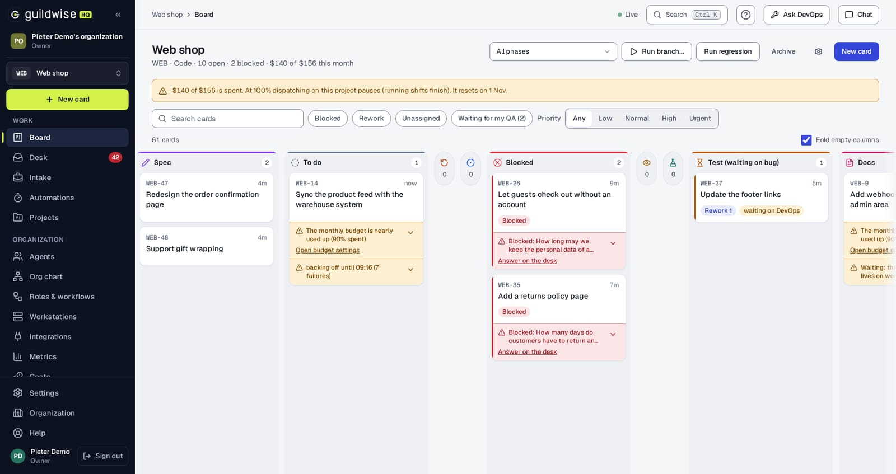
@demo.local, example.com). The agents in the demo run on a scripted stand-in for Claude, so their messages and logs read "[mock] ..." and nothing real (no Claude session, GitHub or Jira) was used. Real agents write real work.Guildwise HQ is a place where you run a team of AI agents the way you would run a small company. You write down what you want. The agents do the work. They stop and ask you whenever a decision is really yours to make.
This guide is for people who have never worked with AI agents before. You do not need to be a programmer to read it. Where a technical word is unavoidable, it is explained the first time it appears and again in the glossary in chapter 2.
How to use this guide
Imagine you hire a small team: someone who builds, someone who checks the work, someone who tests it, and an assistant who keeps notes and reports to you. Each of them can work on several things, but they cannot read your mind. When they are unsure, they ask. When something is risky, they wait for your go-ahead.
Guildwise HQ is that team, made of AI agents. It gives you:
| You | The agents |
|---|---|
| Say what you want, in plain words, as a card | Turn it into a proper specification, build it, review it, test it |
| Answer questions on the desk | Ask when they cannot decide, and carry on once you answer |
| Approve risky steps (merging big changes, posting to a ticket, spending beyond a budget) | Wait for your approval and never go around it |
| Choose the team, the budgets and the rules | Follow them, and report if something does not fit |
Guildwise HQ itself is a website you sign up for. The agents do their work on a machine you choose, called a workstation: your own PC, a Mac or a Linux machine, a server you rent (a VPS), or a GitHub Codespace (4.19). Your code, your passwords and your files stay on that machine and in your own repositories. The Guildwise HQ website only holds the board, the desk and the records. A small helper program called the runner (installed in the next chapters with a guided installer) connects the workstation to the website.
Read this chapter once. Everything else builds on these words.
| Word | What it means |
|---|---|
| Organization | Your company's space in Guildwise HQ. It holds the people, projects, agents, workstations and records. You can belong to more than one. |
| Owner, Admin, Member, Guest | The four roles a person can have. The Owner runs the organization, Admins help manage it, Members work in the projects they are added to, Guests are visitors from another organization who can work in one shared project. |
| Project | A body of work with its own board, for example "Web shop". A code project builds software. A research project looks things up and writes notes. |
| Card | One piece of work with its requirements and acceptance criteria ("what done looks like"). A card moves across the board until it is done. |
| Board | The columns of a project. Each column is a stage of the work. |
| Agent | One AI team member: a role (such as builder or reviewer), a seniority (junior or senior), a face, a name and a track record. |
| Allow-list | The projects an agent may work on. An agent only ever gets cards from projects on its list. |
| Workstation | A computer of yours where agents run. |
| Runner | The small program on a workstation that does the agents' work and talks to the website. |
| Shift | One stretch of work by one agent on one card. You will see the word in logs and reports. |
| Desk | Your inbox of decisions. |
| Ledger | The shared memory: decisions, standing orders and requirements, searchable. |
| Standing order | A rule every agent reads at the start of every shift, such as "write a unit test for every change". |
| BA | The business analyst agent. It drafts cards from your requests and tickets, answers what it can from the ledger, and writes your daily floor report. |
| Architect | An optional senior agent that investigates and designs a card before the builder starts, or answers a question in a written report. Off until a project turns the design step on (4.20). |
| DevOps engineer | A free agent that looks after one workstation: installs tools, keeps your repositories tidy, starts and stops things. |
| Vault | A folder of notes (a git repository) that is synced to your workstations: your organization's knowledge base, or one project's own notes. |
| Priority order | The order of your projects on the Projects page, most important first. Agents serve the project higher up first. |
| Automation | A trigger plus one action, for example "every Monday at 07:00, create a card" or "when a card reaches Review, create a follow-up". Called a schedule before October 2026. |
| Interest | A topic you follow, such as "AI news". Agents look for new items on a schedule and deliver them to your desk. |
| Phase | A named slice of a project ("Phase 2: autosave") that you ship and check together, followed by steps such as deploy and regression run. |
| Budget | A monthly spending limit on a project (or an interest). |
The in-app glossary is at Help, Glossary.
A card in a code project goes through the same stages every time. You do not have to push it along. The agents do.
If anyone gets stuck or needs a decision, the card turns to Blocked and a question appears on your desk.
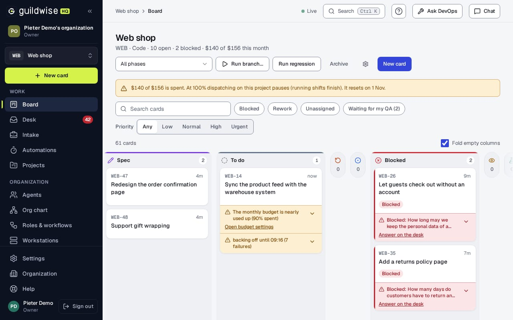
/help/board-and-cards) and "Testing and finalization" (/help/testing-and-finalization).In short: Owners and Admins manage, Members work in the projects they were added to, Guests work in the one project that was shared with them, and the platform administrator only runs the service and never sees your work. Chapter 4 to 7 have the details for each role.
/help/organizations-and-roles).By the end of this chapter you have: a working login with two-factor protection, a workstation connected, a small team hired, a project and your first card moving across the board.
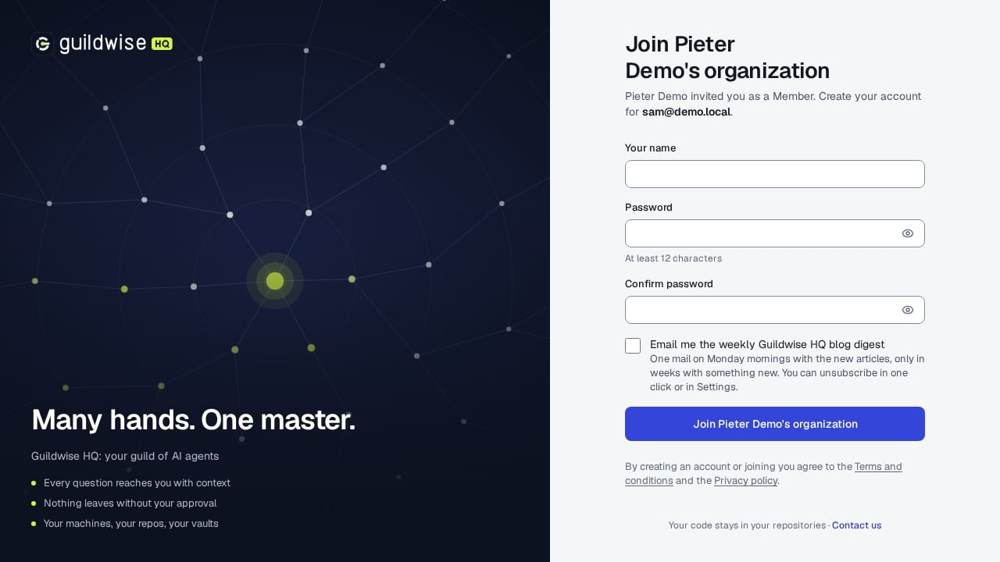
If the link says the invitation is no longer valid, it has expired, was used already, or was withdrawn. Ask the person who invited you to send a new one.
No invitation? Sign up yourself. On the website click Start free trial (or a plan's button under Pricing), choose a plan and enter your organization name, your name, email and a password. Open the link in the confirmation email: you are signed in and see one page, Start your 7-day free trial, with your plan, its price (US dollars, VAT included, and the rand amount at today's rate) and the trial's start and end dates. Add a card there: your 7-day free trial starts and the app opens, with the tour and the Get started checklist; nothing is charged until the trial ends (4.17). Until the card is saved nothing else in the app opens, and coming back later shows the same page. A sign-up that never adds a card is removed after 14 days. You are the Owner of the new organization.
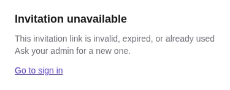
Forgot your password? On the sign-in page click Forgot your password?, type your email and we send a link (it works once and expires after an hour). We answer the same way whether or not the email has an account, so nobody can find out who is registered. Choose a new password (at least 12 characters); every other place you were signed in is signed out. Then sign in as usual: if you use two-factor login you still enter your code. A platform administrator can also send you this link (7.4). Platform administrators may use it too (their two-factor code is still asked at the next sign-in). If the email never reaches you, your organization's Owner or an Admin can give you a temporary password instead (4.15).
Visitors who are not signed in see the landing page, with Log in and Start free trial buttons, the plans and prices, a link to the blog, and a small Ask Guildwise chat that answers questions about the product.
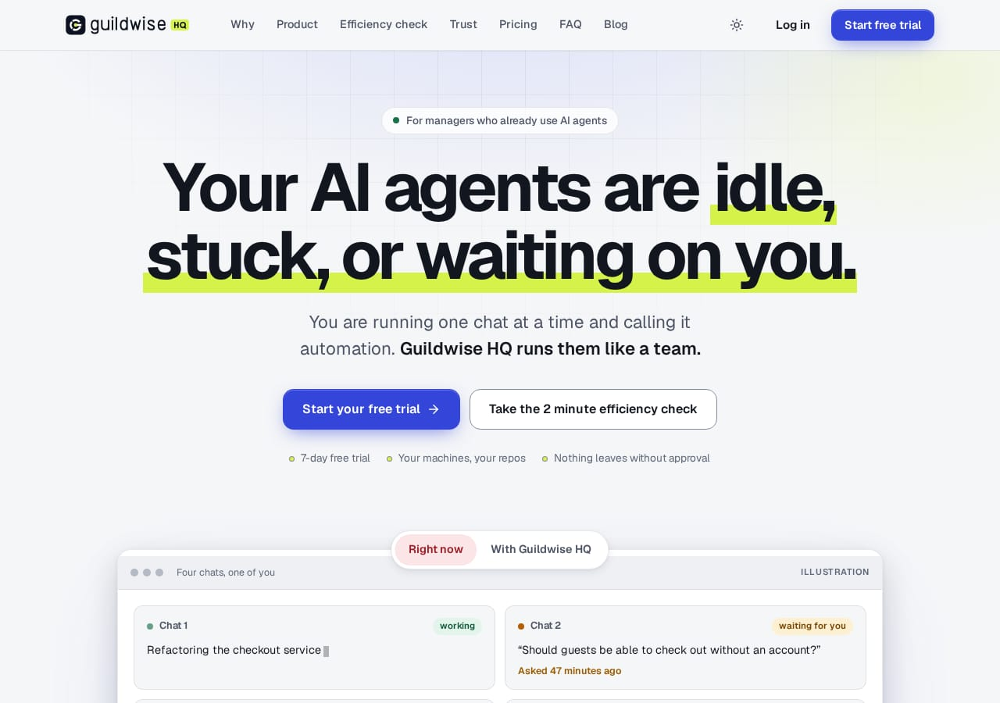
The footer links the Privacy policy and the Terms and conditions. The sign-in and invitation pages remind you that signing in or creating an account means you accept them.
To sign in later, go to the sign-in page, type your email and password, and press Sign in.
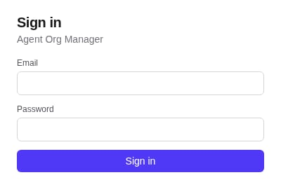
A wrong email or password always gives the same message, so nobody can use the page to find out who has an account.
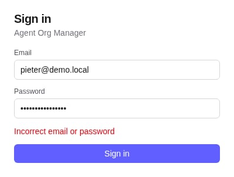
Two-factor login means that after your password you also type a six-digit code from an app on your phone. Even if somebody learns your password, they cannot get in. It is strongly recommended for everybody, and your Owner may require it.
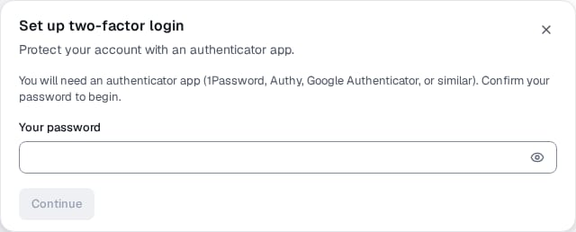
/help/two-factor).The first time you sign in, a short guided tour highlights the main areas and tells you what each is for. The tour is different for each role. You can skip it and replay it any time from Help; a tour you closed half way does not come back by itself, but Help offers to resume it.
The tour starts with the training video: its first step is Watch the 3-minute getting-started video, with the player (captions and chapter buttons) in the tour card; press Next: take the tour to carry on (the video pauses). The same video is on the Help page as Getting started in five steps, a spoken tutorial of about three minutes: create a project, hire your agents, create cards, talk to the business analyst, and test the result. If the video file is missing, the first step shows a short text instead.
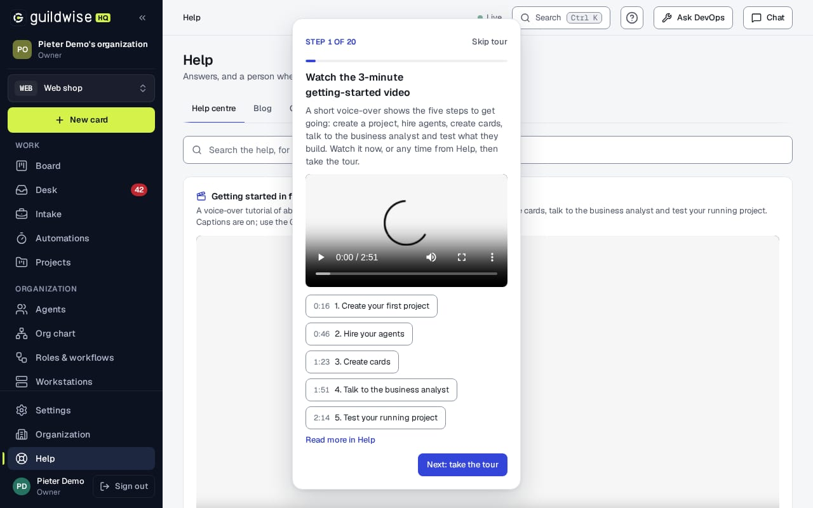
After an update, a window called What's new in Guildwise HQ opens the next time you sign in and lists the changes meant for your role, newest first. Click Got it to close it; it is remembered for your account, so it does not come back on another device. It never opens on top of the tour, and a brand-new account does not see changes from before it existed. To read the list again, open Help and choose See what's new.
Three things worth knowing from the start:
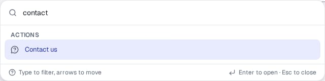
A workstation is the computer where your agents will work. The guided installer sets everything up for you.
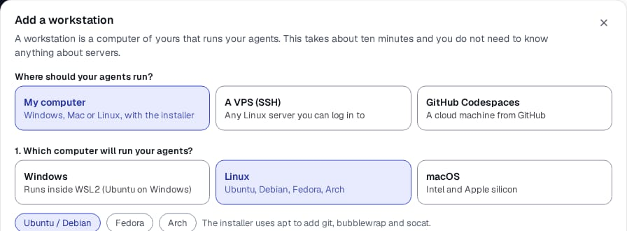
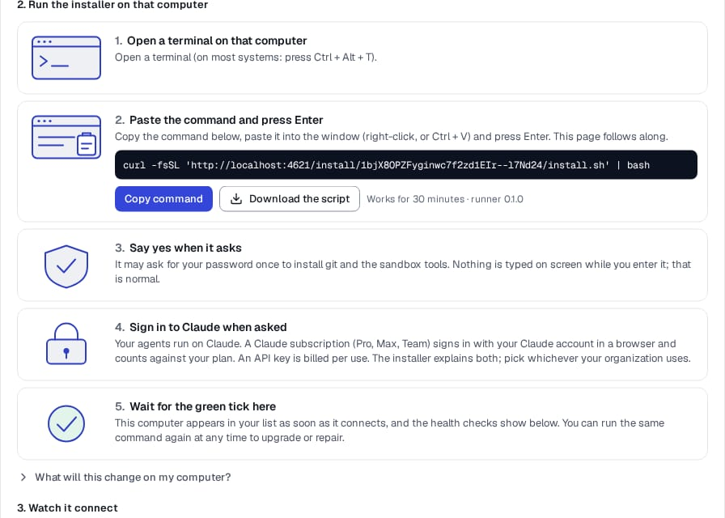
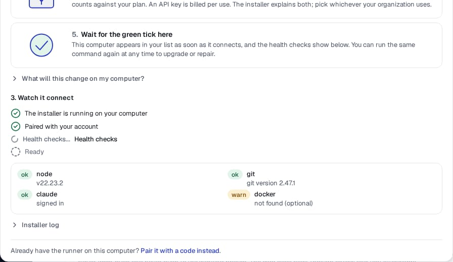
The installer asks only what it must: your password once to install system tools, whether you want the optional extras (yt-dlp for transcripts of videos and podcasts; Docker only if your tests run containers), and how Claude should sign in. Your code lives in ~/src; the installer asks about the folder only in expert mode (Settings) or with --choose-folders. It explains the two ways in plain words. Choose Claude subscription if you have one: you sign in with your Claude account in a browser. Choose API key if you would rather pay for exactly what the agents use.
The runner updates itself. Once installed, the runner checks once a day (and a few minutes after it starts) whether the server offers a newer version. It downloads and checks it, then waits until no agent is working on that workstation before restarting into it, so a running job is never cut short (after about six hours of being busy it updates anyway). The Workstations page shows the runner version and, when there is something to know, a label: Update pending, Updating, Update failed, Update rolled back (the new version did not connect within a few minutes, so the runner went back to the previous one by itself), Updates paused (a platform administrator paused automatic updates) or Updates by hand (this runner was not started by the installer's service). Platform administrators pause and resume automatic updates under Runners in the platform area. You can still run the install command again at any time, and set AOM_RUNNER_AUTO_UPDATE=0 for the runner to switch updating off on one computer.
If something goes wrong, the installer says what happened and links to the install help and to Contact us. Chapter 9.1 covers the usual problems.
/help/workstations-and-installer) and "Installing a workstation: if something goes wrong" (/help/install-troubleshooting).Once the workstation is paired, open Integrations in the sidebar (or the Integrations button on the workstation's card). With several workstations you choose one first. Each tile is one connection with its status: Connected, Not connected, Refused, Expired, Needs sign-in, Unreachable, Tool missing or Not needed; it also shows who it is signed in as, the scopes (missing ones in amber), when it expires and when it was last checked. Connect, Replace, Test and Remove are on the tile; "How to set it up" lists the steps with links to where the token is made, and "From a terminal" gives the command for a machine without a browser.
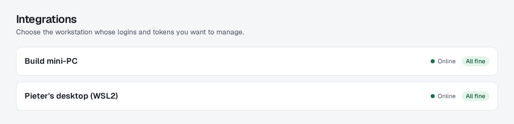
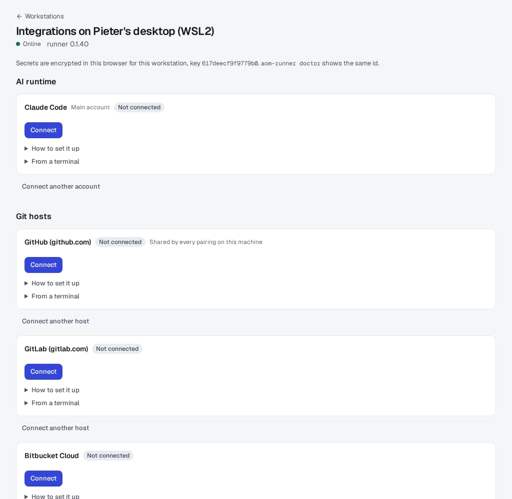
What you type is sealed in your browser with a key that belongs to that workstation (the page shows the key id; aom-runner doctor shows the same id) and only the workstation can open it. Guildwise relays it and cannot read it; it is checked with the provider on the workstation and saved there only when the provider accepts it. If you would rather never send a credential from the browser, run aom-runner integrations allow-web off on the workstation: the page then says it is turned off there and you use the terminal commands.
claude setup-token. A subscription is for your own use.repo, read:org, gist).api and write_repository; Azure DevOps: an organization-scoped token with Code read and write and Project and Team read). GitLab shows the expiry.http://localhost. If your browser is not on the workstation that page does not load: that is expected. Copy the whole address from the address bar and paste it into the field. (If the browser is on the workstation itself, it finishes by itself.)Some logins belong to the whole computer (the gh login, ~/.claude, MCP sign-ins) and are shared by every pairing on it; the tile says so, and from the web they can be changed only through the computer's primary pairing. The same page is where the notices Claude login expired and needs sign-in on your desk lead to: Sign in from the web.
/help/integrations).You need at least a builder, a reviewer and a tester to get a card from idea to done. The BA is also strongly recommended.
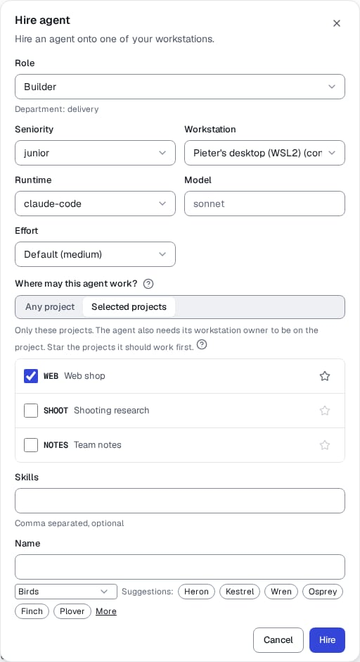
Each workstation also gets a free DevOps engineer automatically. You never hire or fire it.
/help/agents).WEB; card references look like WEB-1). Choose the Workflow: Code for software, Research for investigations, or a custom workflow your organization designed. Click Create project.src/app), fill in Project path; leave it empty when the app is at the top. Each repository has a Main branch (where pull requests go) and a Working branch (where finished work is combined), both the repository's default branch unless you change them; finished work is committed and pushed to the working branch automatically after review and test, and you can change How finished work lands in the same settings (see 4.4). A research project needs no repository.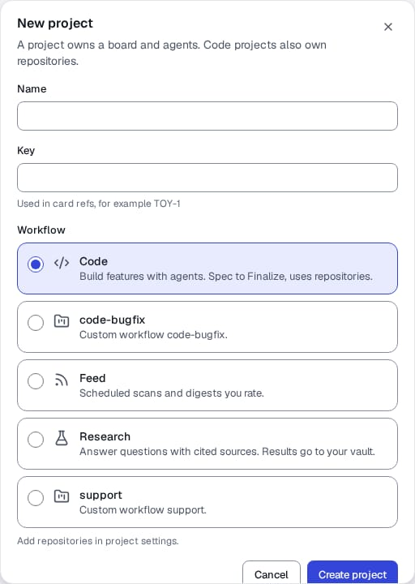
/help/projects).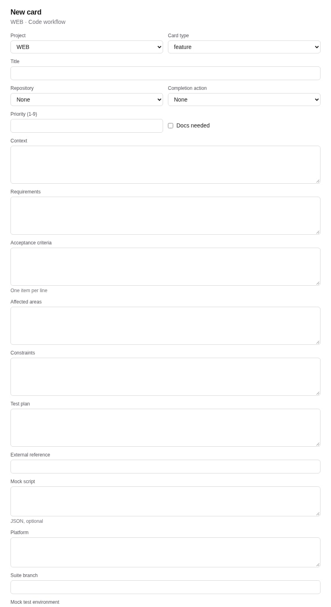
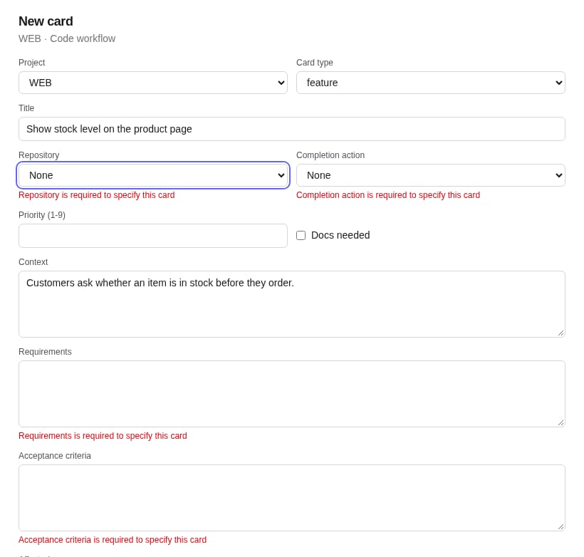
Attachments. A card can carry files: screenshots, a design (SVG, PDF), a spec, a log. On the New card form use Attachments, Add files; on an open card use the Attachments section (drag files in or choose Add files; images show as previews; Download and Remove are on each file). The card owner and the project owner can add and remove files; every member of the project can look and download. Limits: 20 MB per file, 100 MB and 50 files per card; images, SVG, PDF, zip, Office files and text are accepted, programs and scripts are refused. Builders, reviewers and testers get the files as read-only copies next to their shift and can look at them (an agent can view an image), so say in the card what each file shows. The BA attaches the files of a Jira ticket to the cards it drafts and says which went where.
Within a minute the card moves to Build. A builder works on it, then a reviewer, then a tester. Open the card to follow along: the Live shift panel shows what the agent is doing right now, Handoffs shows the notes agents leave for each other, and Timeline records every step.
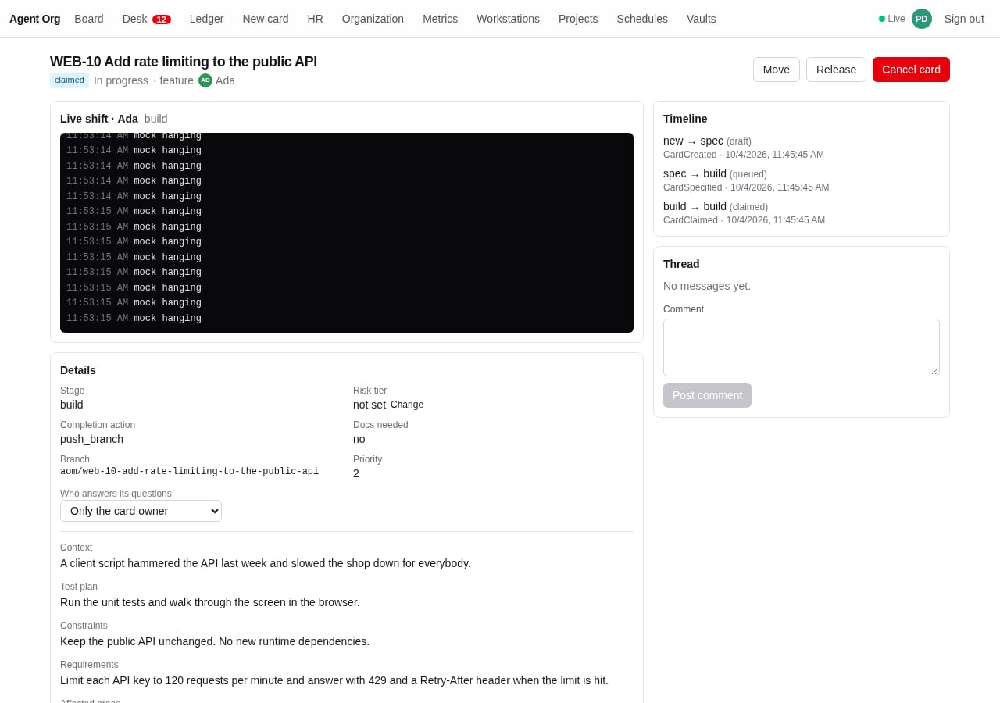
When an agent needs a decision, the card turns Blocked and the question appears on your Desk. Answer it and work continues. When the card is done, the card says where the change went: "Your change is live on main", or "Waiting for you to merge the pull request" if the project works with pull requests.
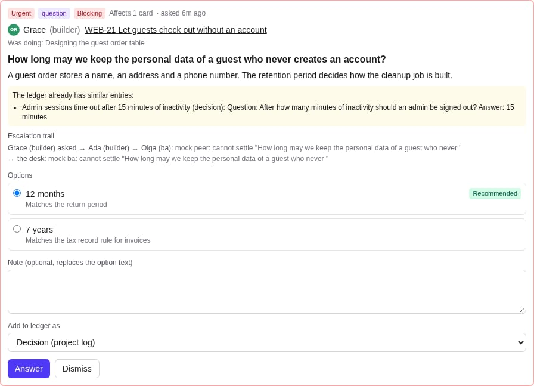
You now have a working team. The rest of this guide is for when you want more: more control, more automation, or more safety.
The Owner runs the organization: there is exactly one, and the Owner can hand the role to someone else. Admins are appointed by the Owner and help manage. This chapter covers everything the two roles do. Where something is only for the Owner, it says so.
| Owner | Admin | |
|---|---|---|
| Create projects, add people to projects, change project settings | yes | yes |
| See every project of the organization | yes | yes |
| Invite Members | yes | yes |
| Invite, promote or demote Admins; change roles | yes | no |
| Remove Members | yes | yes |
| Remove Admins | yes | no |
| Hire, change and fire any agent, widen an agent's permissions | yes | yes |
| Set budgets, see Costs | yes | yes |
| Design roles, workflows and departments | yes | yes |
| Org-wide automations, interests quiet cap, BA settings | yes | yes |
| See plan and limits | yes | yes |
| Require two-factor login for everybody | yes | no |
| Hand over ownership | yes | no |
Open Organization at the bottom of the sidebar. The General tab shows the organization's name (rename it here) and the security switch for two-factor login (4.15).
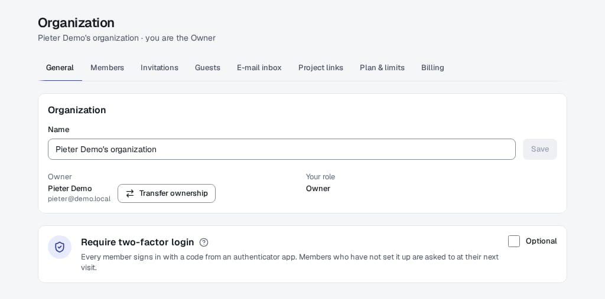
If you belong to several organizations, the organization switcher at the top of the sidebar shows which one this browser tab works in. A different tab can work in a different organization. Projects of an organization where you are only a guest carry a "Guest" label.
On Organization, Members you see everybody with their role.
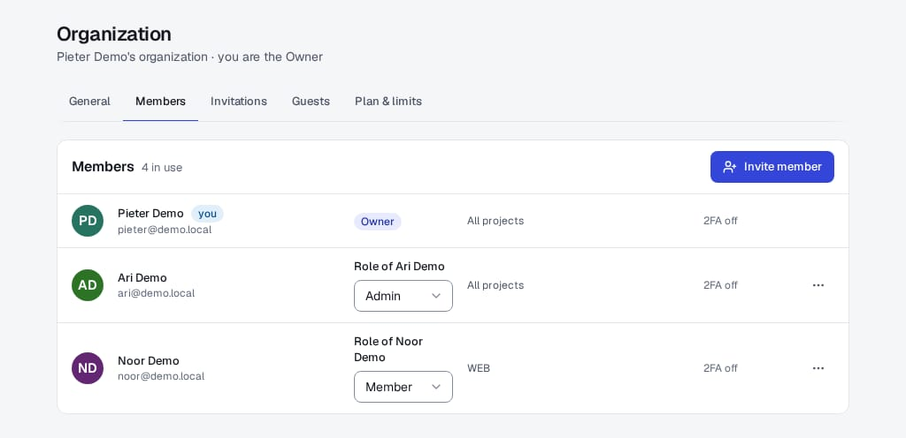
To invite someone: click Invite member, type their email, choose the role (Member, or Admin if you are the Owner) and, if you like, the projects they should start on, then Send invitation. They receive an email with a link that works for 7 days. On the Invitations tab you can see pending and past invitations, resend one or revoke one.
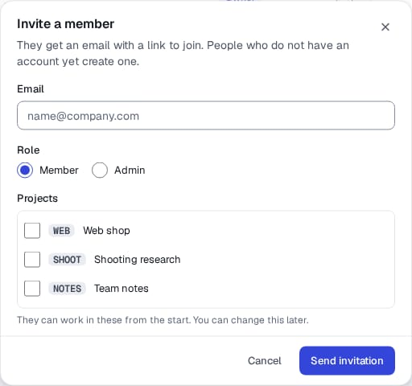
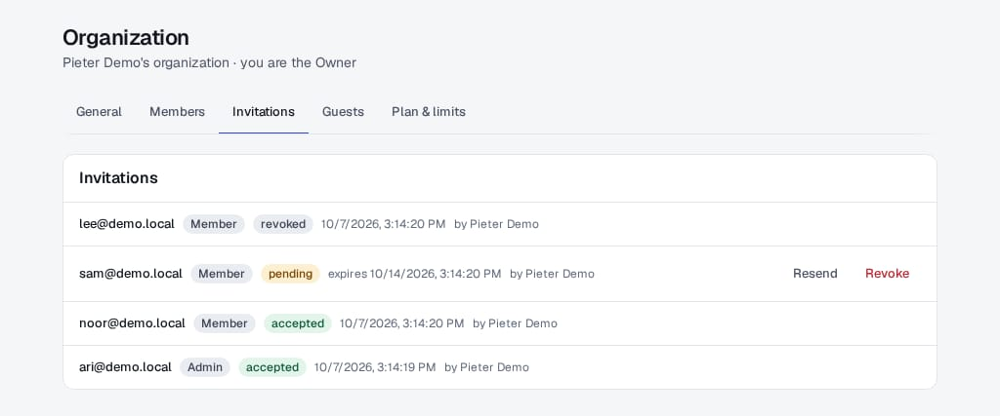
To change a role or remove a person: use the role selector and the remove button in the Members list. When somebody is removed, their agents are handed to you and any cards those agents held go back into the queue. Anyone except the Owner can leave an organization. The Owner must hand over ownership first (General, Transfer ownership, which asks for your password).
Guests are people from other organizations who work in a project you shared. The Guests tab lists them and the projects they can reach (see 4.3, sharing a project).
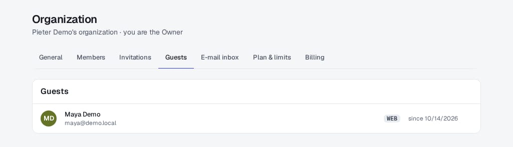
/help/organizations-and-roles).Create a project as in chapter 3.6. A new project goes to the bottom of your priority order (see below). Everything about a project lives in its Settings (the gear on the Projects page).
Put your projects in order. The Projects page lists your organization's projects, most important first. When an agent looks for its next card, it takes work in this order: scheduled work first (schedules, interest scans and an on-demand Research this), then cards that came back to it for rework, then the project order (the card of the project higher up first), and then the card's own priority, how long it has waited and its dependencies. An agent's focus projects (4.4) are a gentle preference ahead of the order. A shift that has started is never interrupted: a more important card waits for it to end.
Owners and Admins change the order by dragging a project by its grip (the dotted handle on the left), or with the Move up and Move down buttons on each row. With the grip selected, the up and down arrow keys move it as well, and Home and End send it to the top or the bottom. The order saves by itself. Members and Guests see the order but cannot change it. Archived projects are not ranked, and the hidden projects behind interests never appear: interests run on their own schedule and are not ranked.
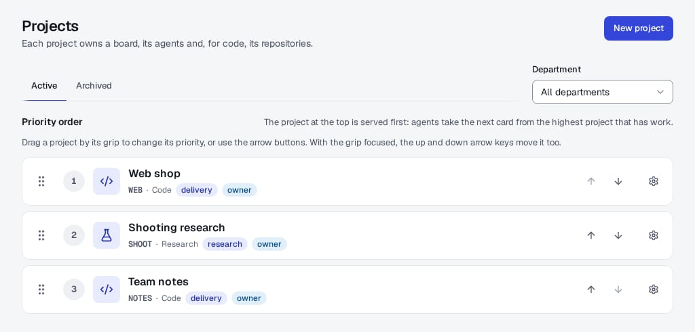
personal/ in the organization vault. The desk note you received says what happened.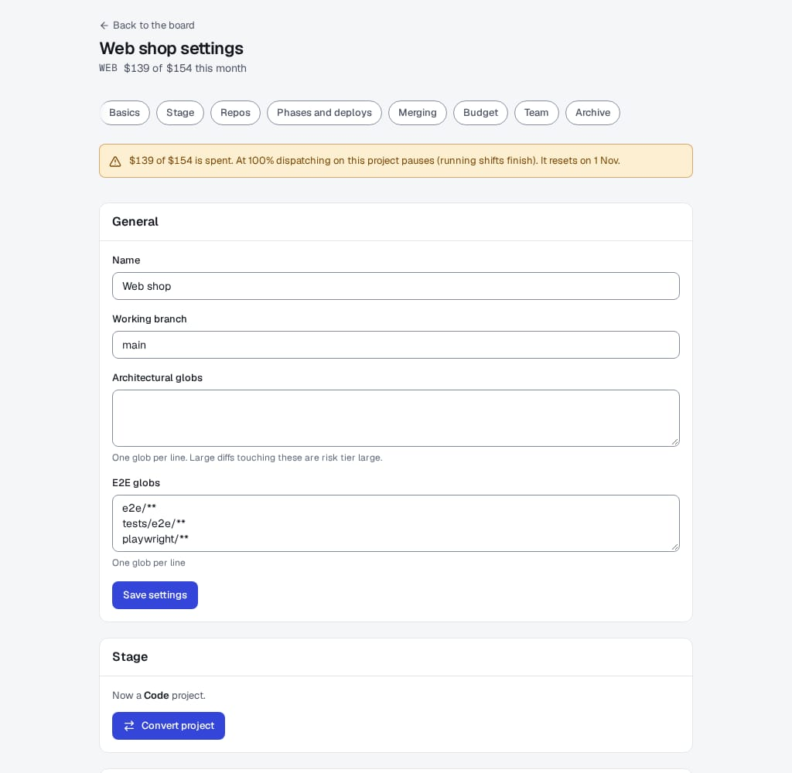
What you will find there:
.env files, keys, certificates) stay blocked. Every repository you do not pick stays blocked, and so does everything else on the workstation, including this platform's own code.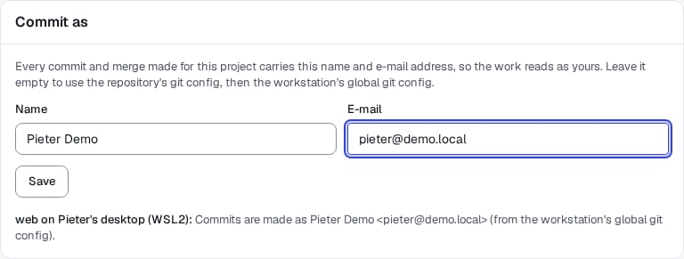
Who answers a card's questions. By default only the card's creator answers them. On the card page you can let any project member answer (Who answers its questions).
Project types. A code project follows Spec, Build, Review, Test and Finalize. A research project follows Question, Research, Fact check and Publish and writes its results as notes into the project's vault folder. Your organization can also design its own workflows (4.7).
Adding people to a project. Only Owners and Admins add people. Add an organization member under Team in the project settings. They get access at once. To share with somebody from another organization (a guest), type the email of an existing account and click Invite. They accept in the Project invitations inbox on their Projects page, and they only ever see this project. There are no guests without an organization. Someone with no account must be invited as a Member of your organization instead.
Vaults. A vault is a git repository of notes that syncs to your workstations. Agents read it (never write it directly) in card work, chats, questions and the BA's tasks. There are two kinds: the organization vault (your organization's knowledge, including your interests under interests/, shared among Owners and Admins) and a project vault (shared with the project's members; a project without one reads the organization vault). Register them under Vaults in the sidebar. The address must not contain a password or token. Use an SSH key or a credential helper on the workstation instead.
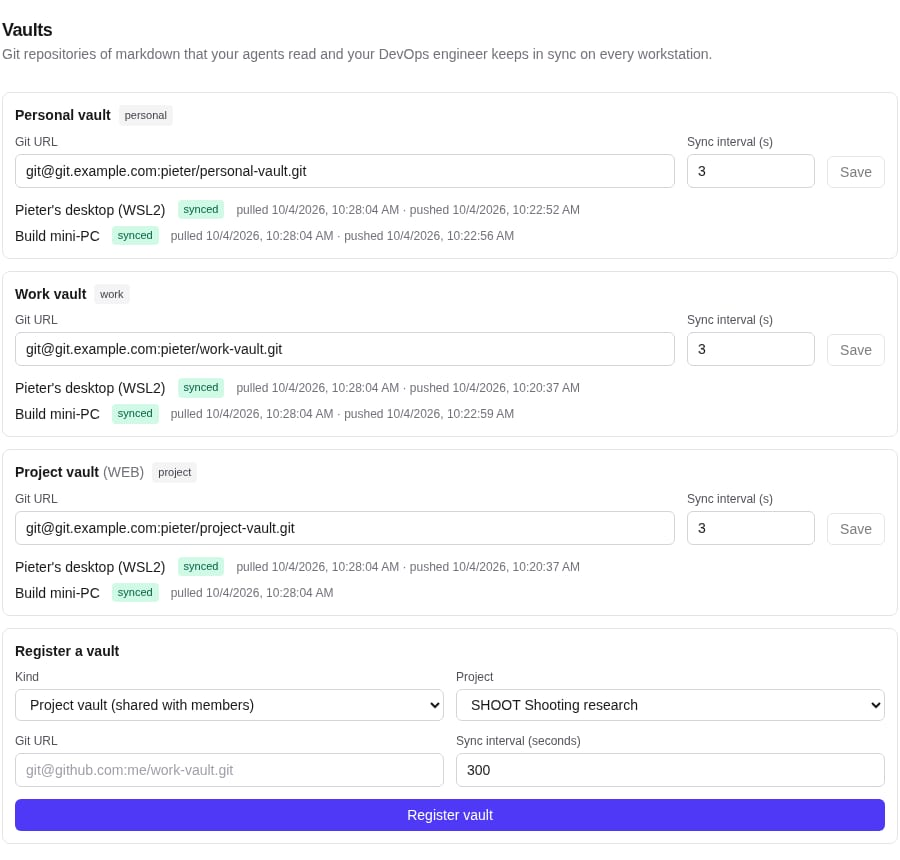
/help/projects) and "Ledger and vaults" (/help/ledger-and-vaults).Agents belong to the organization, not to a single project. For each agent you decide where it may work: its allow-list. The agent is only offered cards from those projects.
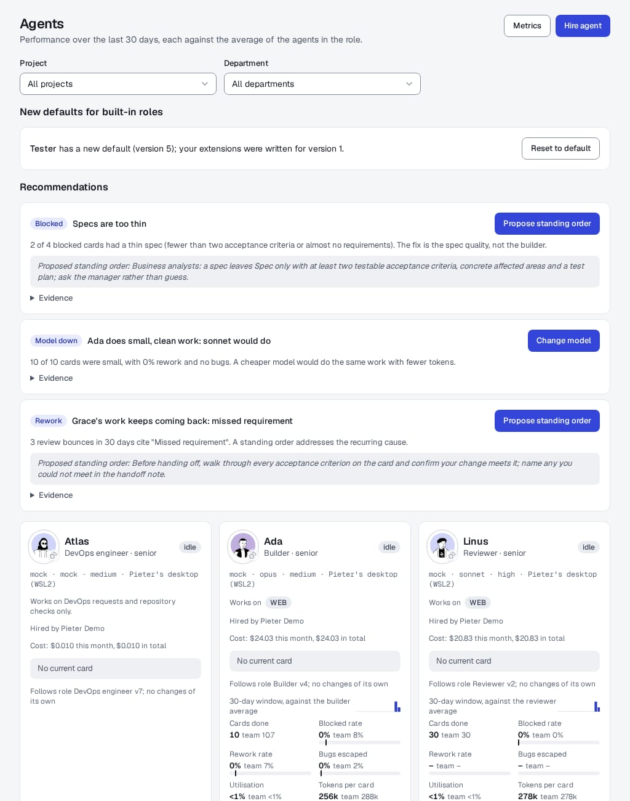
Hiring works as described in 3.5. Hiring has a few more options:
Changing an agent. On the agent's card use Projects (the allow-list), Change model, Change role, and Fire. Firing releases the cards the agent holds back to the queue with the last handoff, deletes the agent's private sandbox, and retires the name. The agent's history stays in the records. A fired name is never reused.
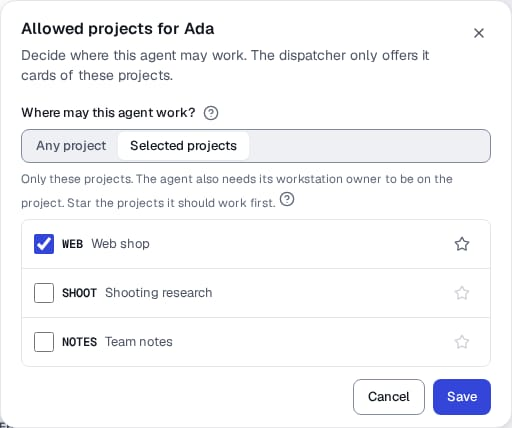
Agents follow their role. An agent always works with the current version of its role: when a role gets a new version (a built-in update, or a custom role you approve), the agents in that role pick up its new permissions and instructions. What you changed on one agent yourself (extra blocked commands, narrowed tools, external tools) stays. The card shows "Follows role Builder v4" and lists those changes of its own.
External tools (MCP). Each agent card has an External tools (MCP) section: one switch per plugin MCP server your workstations report, with a plain-language note and the same warning as in the project settings (a server that can write, send or delete lets the agent change data in that service as you; prefer read-only use). This is how a built-in agent such as the business analyst, the builder or the architect gets Jira or Confluence, since built-in roles have no external tools of their own. Everyone who can see the agent reads the switches; only the organization Owner can change them (Administrators and the hiring manager get a clear refusal, but may still switch a server off). The server must also be granted to the project (project settings, MCP servers), otherwise the agent cannot use it. The DevOps engineer has no such section and cannot be given external tools.
Each agent card also shows what the agent costs this month and in total, how many cards it finished, its bounce rate (how often review sent its work back) and its current work.
Recommendations. The Agents page suggests changes based on how the team performs: a different model, hiring another reviewer, or a standing order. You can apply them in one click, or ignore them.
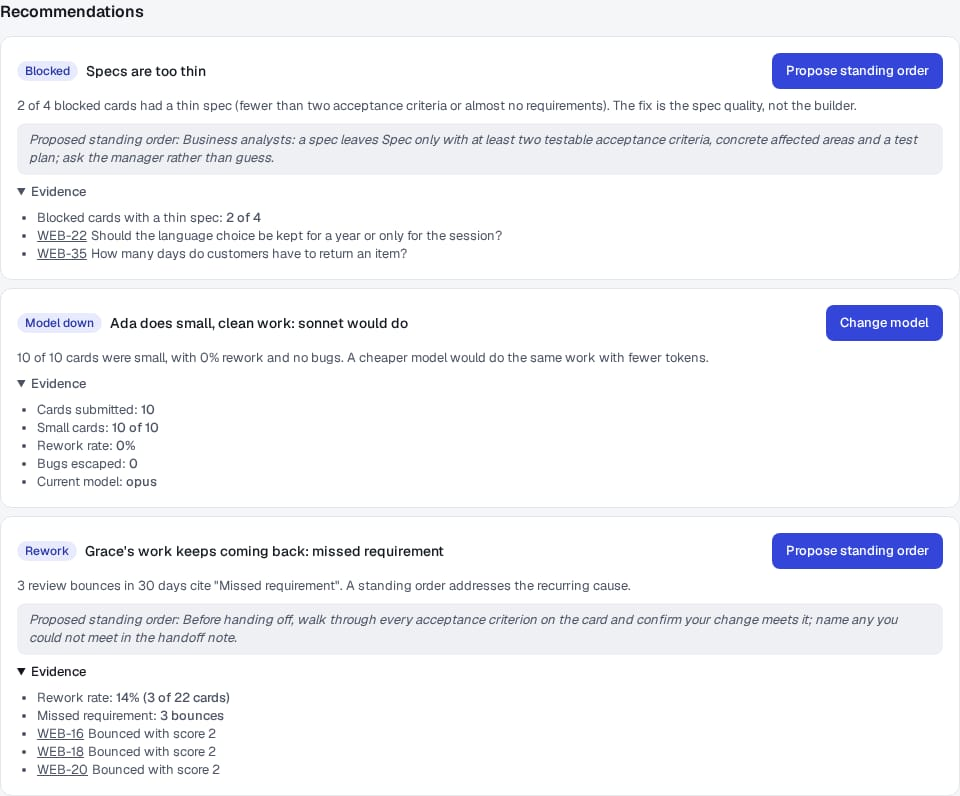
Safety. Agents run inside a sandbox on the workstation, so they cannot read your whole disk. The DevOps engineer is the exception: it works as you (below). Some computers cannot offer a sandbox (for example plain Windows). The app then shows an amber warning on the workstation, on each affected agent and in the Hire form, and hiring onto that machine needs an explicit confirmation. Prefer a workstation with a sandbox (Linux, macOS, or Windows with WSL2).
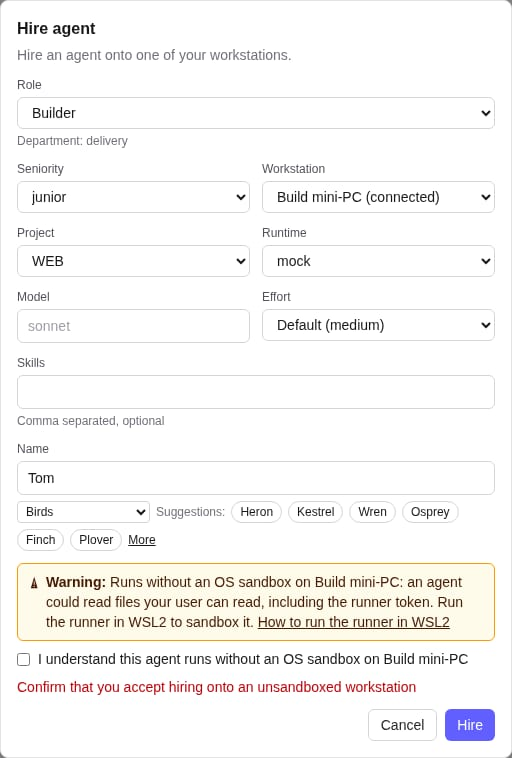
The DevOps engineer. Each workstation has one, free of charge. It installs tools, starts containers, pulls and pushes vault changes and keeps repositories tidy (next section). You can only reset it, never fire it, and only change its model and effort.
Ask DevOps from anywhere. Click Ask DevOps in the top bar, choose Ask DevOps... in the command palette, or use the button on a card, a desk item or the workstation. The page, project, card or error you were looking at is attached (remove what you do not want to share) and the right workstation's engineer is chosen for you when it is obvious. Start chat talks to it; Send as a task files a tracked request. The DevOps engineer works as you on your machine and is not sandboxed, in a chat as in a shift: a command, a Docker build or a deploy you ask for runs right away. The tick boxes on the workstation (install, Docker, sudo, paths) are instructions and limits for the automatic tool setup, not a physical barrier. On a team member's workstation an approval needs an Owner or Admin and the machine's user (one person can be both).
A request about a card. When a request is filed for a card (from the card's Ask DevOps button, or by the agent working on it), the DevOps engineer gets the card in its brief: title, type, fields, project, repository and the latest comments. It can read that card, comment on it and set the card's fields it needs (for example how to start the stack), and nothing else: it cannot change the title, stage or status, and it cannot read or change any other card.
/help/agents).Every project repository has two branches, and the settings name both under the repository:
main); the owner can name another one with Change.develop. If the working branch does not exist yet, Guildwise creates it from the main branch and pushes it when the first card starts; the repository row says when it will be created and, afterwards, when it was and from which branch. If the push is refused, the card says so and the desk asks you, naming the branch, with the reason from the git host.Agents always work on a card branch of their own. How finished work lands (per project, and per card in expert mode) decides what happens to that card branch when the work is reviewed and tested:
| Completion action | What happens | Pull request |
|---|---|---|
Commit and push to the working branch (the default; stored as merge) | The card branch is merged into the working branch and the working branch is pushed. | None. |
Pull request (pr) | The card branch is pushed and a pull request is opened into the working branch (that is the main branch when you use one branch), for you to review and merge. | Card branch to working branch. |
A card follows its project: it has no completion action of its own unless a person sets one on that card (expert mode, at any time before it is finalised). Agents, the BA included, never set it. When you change the project setting, every card that has not set its own, open or not yet started, follows the change; a card with its own action keeps it. In expert mode choose Project default on the card to go back to following the project.
When the working branch is not the main branch, the work reaches the main branch the way you choose: in the repository row of the project settings the owner clicks Open pull request: develop to main, and the workstation opens a pull request from the working branch to the main branch through the git host (or reports that there is nothing new to open). This is deliberately a project action and not part of every card, so a release is reviewed once, not per card.
If the working branch is protected on the code host (it refuses direct changes), Guildwise notices, opens a pull request for the card instead, and switches the project to pull requests with a note on the card. A large change that would be committed to the working branch waits for your approval on the desk first (see 4.12).
You see plain outcomes on cards: "Goes into the working branch after review and test", "Your change is live on the working branch", "Waiting for you to merge the pull request" (with the working branch's name when it is not main). When two changes clash, the DevOps engineer tries to fix it first and leaves a note on the card.
If you know git and want the details, turn on Expert mode for code changes in Settings (it is per person and off by default; it only changes what you see). It brings back the per-card completion action (commit and push to the working branch, or pull request), branch names and commit hashes, Mark merged on the phase page, and the questions about keeping or changing the working branch for a new intake or phase. The main and working branch rows in the repository settings are shown to everyone.
Once a day per workstation the DevOps engineer tidies the project repositories on that machine: it fetches and pulls, stores any uncommitted edits of yours in a git stash (git stash list shows saved work <date>: N file(s) not committed; it stays on your machine, is never pushed and adds no branch; your files are left exactly as they are and nothing reaches main by surprise) and removes branches and worktrees of cards that are finished and merged. Files that look like passwords or keys (.env*, *.pem, names with key or secret) are never copied; the notice on your desk names them. Hygiene never force-pushes and never discards anything. Change the time or switch it off in the workstation's Repository hygiene panel on the Workstations page, or start it with Run hygiene now.
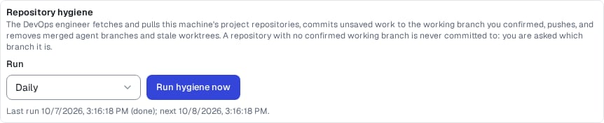
The working branch is the repository's default branch unless you name another, confirmed automatically the first time Guildwise sees the repository. You are asked on the desk (Which branch is the working branch of this repository?) only when the default cannot be told. The owner can change it in the project settings (Change) and you are asked again when a new intake or phase starts ("keep main as the working branch?").
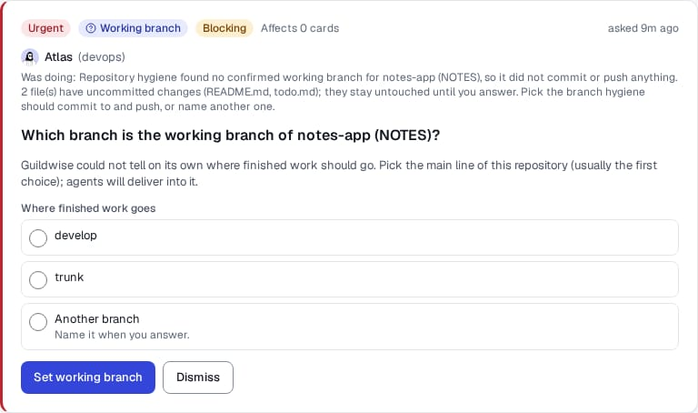
Card branches only go to the git host when the card needs them (a pull request, or "push the branch"). A pull request goes out as <prefix>/<ticket>, for example pieter/DCPL-4276: the prefix is the project setting Pull request branch prefix (empty: feature), the ticket is the Jira key the card came from, else the card reference (-2, -3 if the name is taken). Rework pushes to the same branch and pull request. Your local card branch keeps its name; with "Commit and push to the working branch" only the working branch is pushed. Hygiene also deletes the branch of a done or cancelled card, on the host, on the workstation and its worktree, once its work is in the working branch (merged, rebased or cherry-picked) or its pull request is merged (a declined pull request alone does not delete a branch that holds unmerged commits). Open pull requests, branches with work found nowhere else and branches of open or reopened cards are never touched. The card records each deletion and your desk gets one notice per run. Turn it off with Remove finished card branches in the project settings.
What hygiene cannot resolve, it does not force. For a conflict while pulling, the DevOps engineer first tries to resolve it on a temporary branch and runs the tests (you get a notice; after two attempts it goes to your desk). Changes on the wrong branch, a failed login, a missing clone, or a leftover worktree with uncommitted work are not forced either. These appear under Failures in your BA's daily report until a later run finds the repository in order.
/help/devops-and-hygiene).The Desk is where every question and approval reaches you. Cards do not move past a question until you answer.
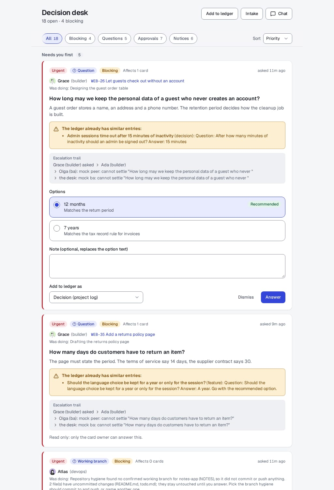
Each desk item says what kind it is (Question, DevOps approval, Merge approval, Outbound update, Digest to rate, Alert, Floor report, and so on), who asked and what they were doing, the question with options and a recommendation, and how many cards are waiting. To answer, click an option or type your own answer, optionally add it to the ledger, and click Answer.
When you answer you can also record it in the ledger as a requirement (a permanent rule), a standing order (an instruction every agent reads at the start of every shift) or a decision (a one-time choice kept for history). That is how the team learns: the next agent who is about to ask the same thing finds your answer first, and the desk shows "similar decision in the ledger".
The Ledger page lists everything and is searchable. Organization-wide standing orders can only come from the Owner and Admins. A project owner adds project-wide ones.
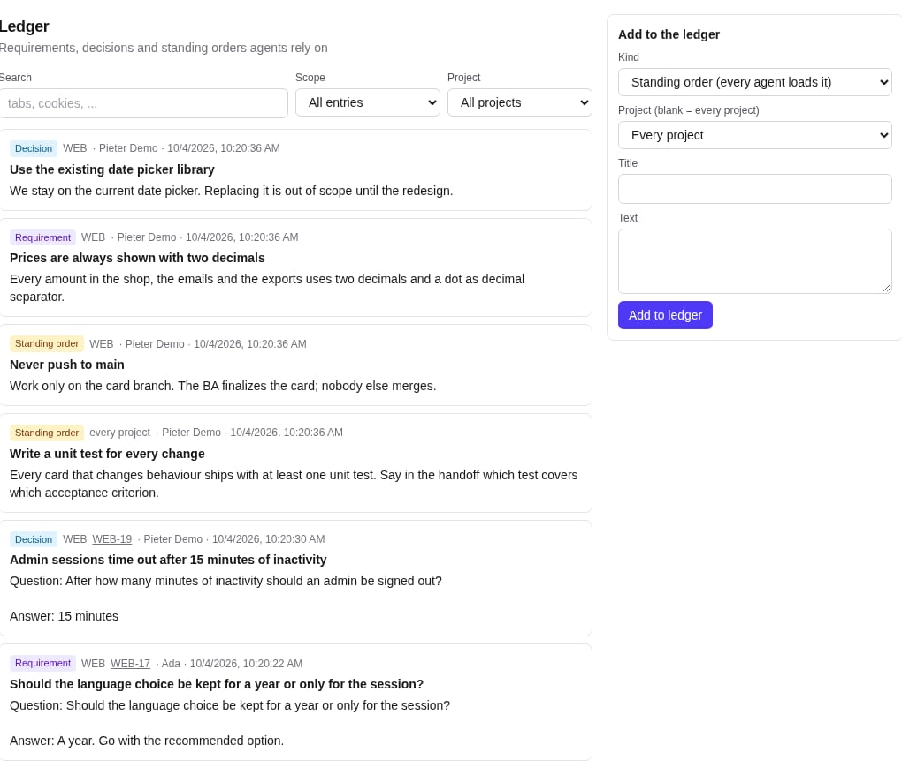
/help/desk) and "Ledger and vaults" (/help/ledger-and-vaults).Every shift records what it used (input, output and cache tokens and the model). The server turns that into money at the list prices of the models, in US dollars, and shows it in your organization's currency. These are estimates of what the work costs, not an invoice. Chats count too: to the project when the chat is about a card or project, otherwise to Org overhead.
Where spend shows:
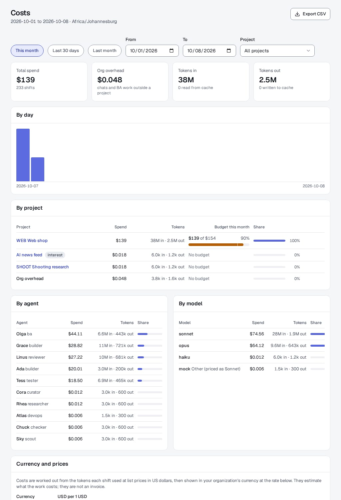
Monthly budgets. In the project settings, Monthly budget sets a limit for the project. (An interest has its own budget on its Settings tab, 4.9.) The month runs from the 1st to the end of the month in your time zone.
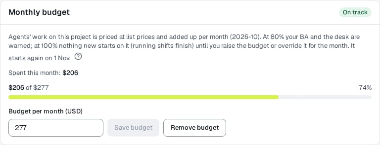
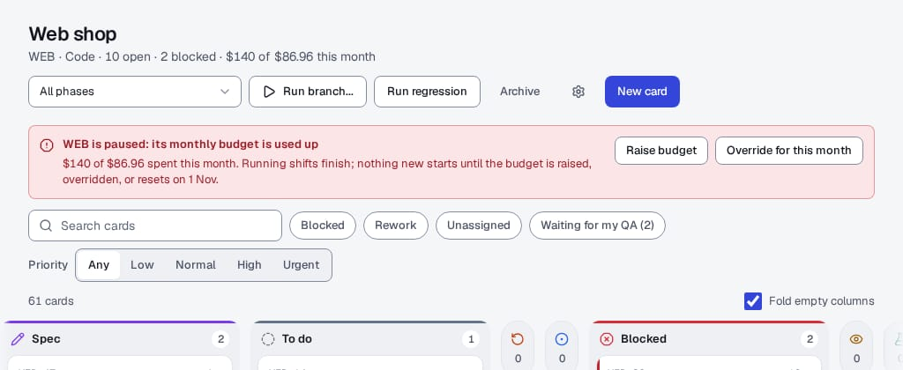
Setting a budget below what was already spent pauses the project at once. Members can see the progress but not change it. Guests see only that a project is paused.
Value report. At the top of the Costs page: "This month: 42 cards, ~168 hours of work, $84 usage, ~80x return", the change against last month, and Next best actions (cards that have not moved for days, agents that fail often, projects with no work). The hours are an estimate of what a person would have needed, by card type; Owners and Admins can change them under Adjust the estimates. Export value report (CSV) downloads it.
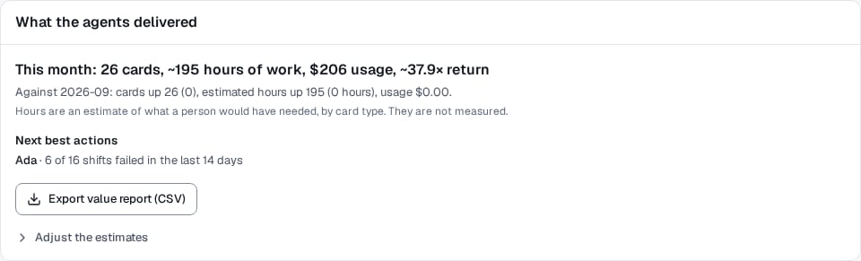
Monday briefing. Every Monday at 08:00 (organization time) you get an e-mail with what was finished, what waits on you, what is blocked and the health of your agents and workstations; Owners and Admins also get spend against budget and the value report. Switch it off under Settings, Monday briefing.
Currency. Under Costs, Currency and prices type a three-letter currency code and how many units make one US dollar (for example EUR and 0.92). Changing the rate changes how history is shown, not what was recorded.
/help/budgets-and-costs).Org chart (sidebar, Organization) shows who works for you and who answers whom, as a tree: you at the top, then the BAs, then each department with its seniors above its juniors. The lines are the escalation path: a question goes to a senior of the same role, then to the BA, then to your desk. Each tile shows the agent's face, name, role, what it is doing and its workstation. Click an agent for its card. List shows the same as grouped lists (the default on a phone).
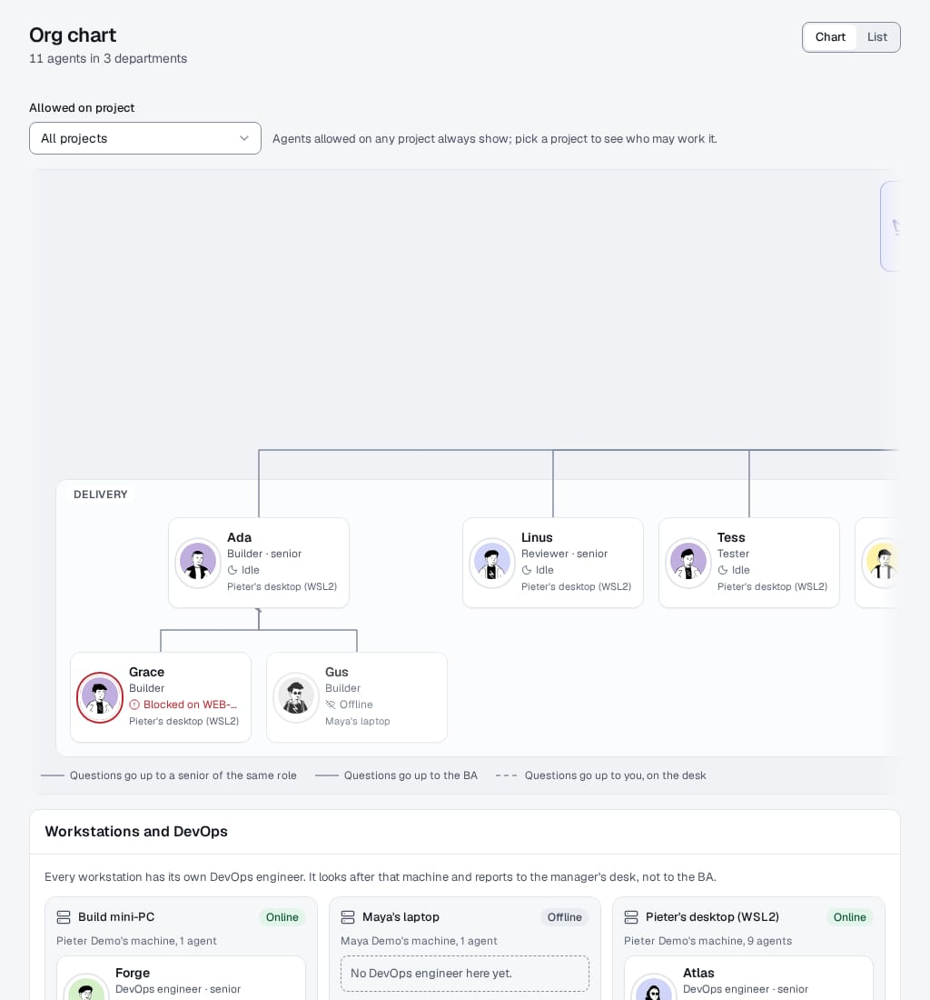
Roles & workflows (sidebar, Organization) lets you extend the team beyond the built-in roles.
Everything you design is submitted to the desk for your approval before it can be used.
The workflow builder. New custom workflow (Workflows tab) opens a template gallery: Blank, Simple review, Request, do, check, Content (draft, edit, publish), Support reply, or a copy of a built-in workflow (Code or Research; the copy does not keep the built-in's special behaviour, such as tests opening bug cards, and the builder lists what it left out). Then you work on the page:
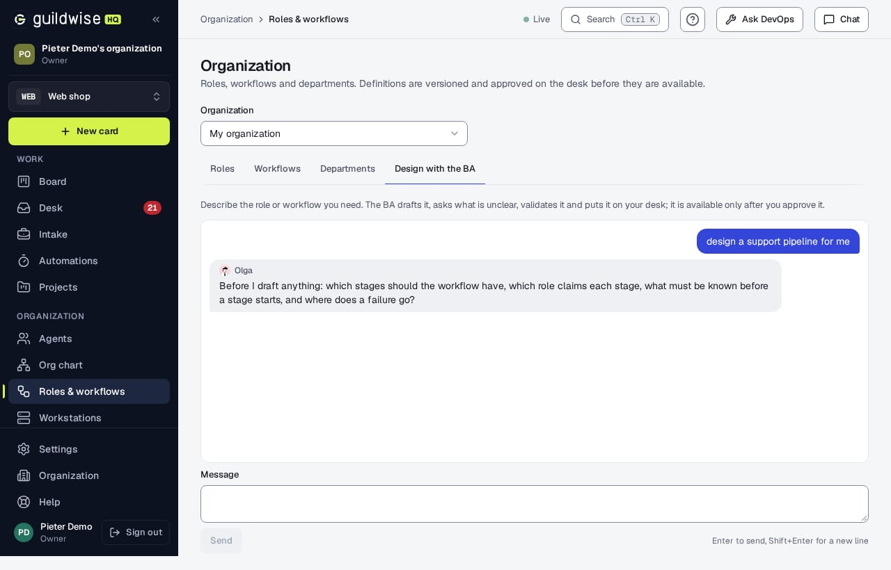
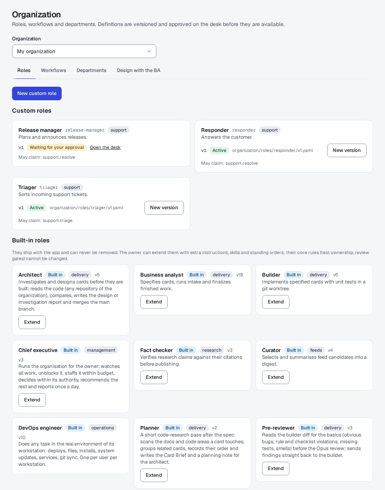
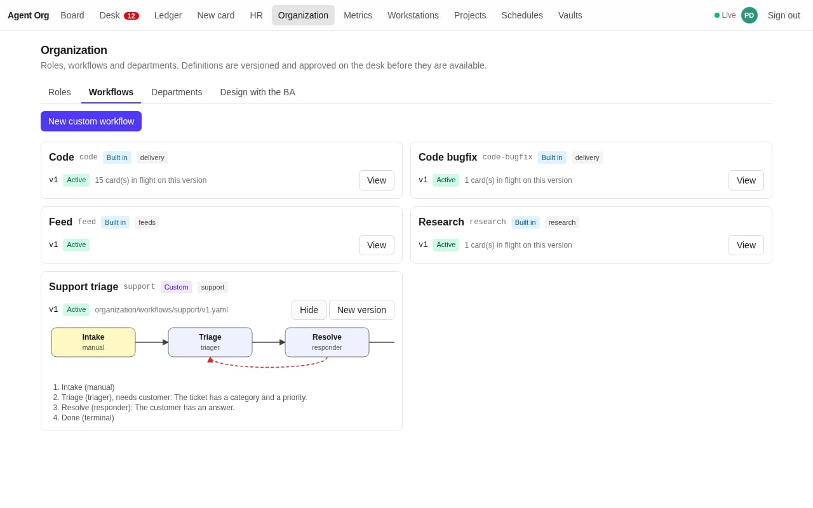
More than one workflow per project, and your own steps in a built-in workflow. A project runs on one workflow by default (its type). In the project's settings, Workflows (organization Owners and Admins) you can:
aom org workflow variant, you approve it on the desk, then enable it in the project's settings.Steps for a person (approval and QA). In the workflow builder choose A person approves it on the desk as the kind of step, say who approves (the Owner, the project owner, the person who started the card or a named member) and which earlier step a send back returns to. The card waits in the step's column and shows on that person's desk; Approve moves it on, Send back needs a comment, which the earlier step reads as a review comment, and the card comes back to the approval after the rework. The Owner and Admins can always decide. A person tests it is the same for manual QA (pass, skip or send back). A project's customised workflow can insert an approval step after any step too.
A step that starts another workflow (sub-workflows). A step of a custom workflow can start a card in another workflow instead of being worked by an agent. In the workflow builder choose Start another workflow as the kind of step (or ask the BA in a design chat to draft it). The step names the workflow, the project (the same one, or another project of your organization where that workflow is enabled and where the card's owner is a member), which fields to pass on (from a field of the card, a fixed value or a text with placeholders) and, while waiting, which to bring back, whether the new card starts queued or as a draft, whether the step waits or carries on, and what happens when the new card is cancelled. A waiting card sits in the step's column with a line such as "Waiting for SUP-12 (Translate) in project Web, now in Review"; when the new card finishes, the card takes the step's done route and the chosen fields are copied back, and when the new card is cancelled it takes the failed route. A card that carries on moves at once. The new card says "Started by" its parent, and the card page has a Sub-workflows panel. Cancelling a waiting card cancels only that card unless you tick Also cancel the card it is waiting for in the cancel window (shown only when you may cancel that card). A manager who moves a card back into a step whose earlier new card still runs makes the card wait for that card again; no second card is started. Nesting is limited to three levels, a workflow cannot start itself (directly or through others), and both are checked when the workflow is saved. When a step cannot start its card (too deep, workflow not enabled in that project, not a member of it, a field that no longer exists) the card is Blocked and a notice lands on your desk; fix the cause, acknowledge the notice and the step is tried again.
A role that works an inserted step must be allowed to claim it: the roles that already work a base step (the builder on Build, and so on) keep working it, while a step you add needs a role that claims it (a custom role naming the step, or the architect for steps named investigate...).
/help/org-chart-and-design) and "Projects" (/help/projects#workflows).An automation (called a schedule before October 2026) is a trigger and one action. Open Automations in the sidebar and click New automation. A three-step wizard asks When, What and Details. The old address /schedules still opens the page.
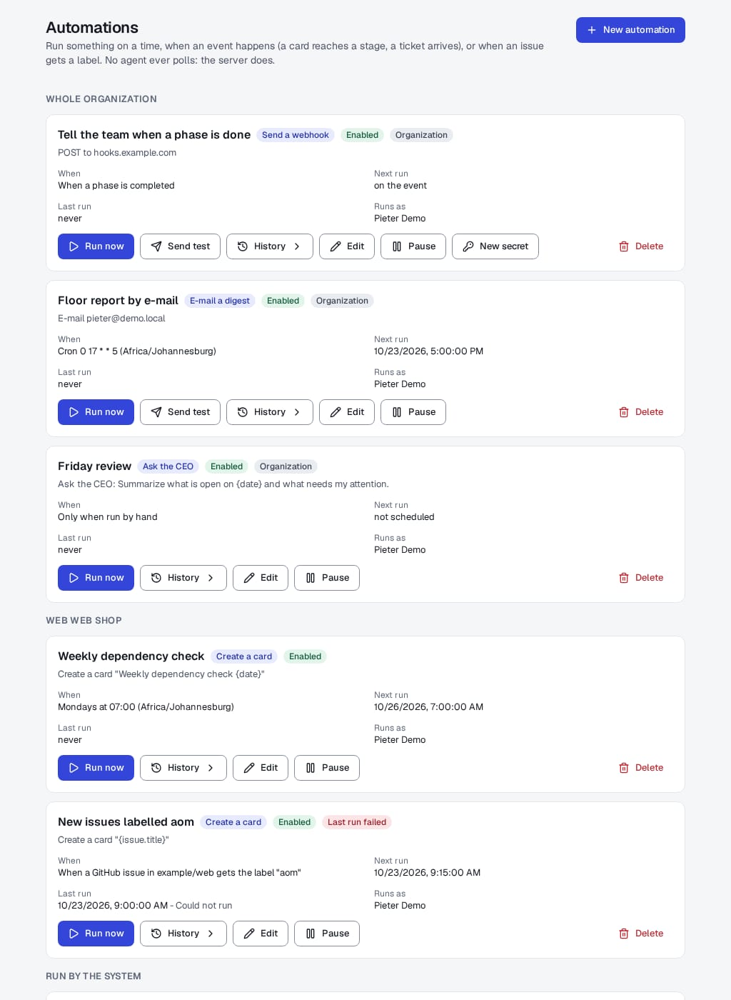
When (the trigger):
| Trigger | What it does |
|---|---|
| On a schedule | A time such as "Weekdays at 07:00" or your own cron expression, in a time zone you choose. If the server was down, a missed run happens once, not many times. |
| When something happens | A phase is completed, a card is finalized, an interest run is done, a project is converted, a card reaches a stage of a workflow, a card of a workflow is done, or an investigation is reported. For the card events you can narrow it to a workflow, a stage, a card type or a field value. Each event runs an automation once. |
| When an intake ticket arrives | The BA took a request into intake, from an issue poll or the intake chat. You can limit it to one source. |
| When an e-mail arrives | Someone writes (or forwards) to one of your Guildwise inbox addresses. You can limit it to some senders or to a word in the subject. See "E-mail inbox" below. |
| When a web address is called | Another system (monitoring, a form, n8n, Zapier) calls a private address. Saving makes the address and its secret; you see it once. Fields of what it sends fill the card through tokens such as {hook.title} and {hook.customer.name}, and are read as information, never as instructions. Cards start as drafts unless the Owner allows queued. Calls per hour are limited, every call is a run in the history, and New secret or Switch the secret off ends the old address. |
| When a reply arrives | Someone replies to a mail that became a card. The reply is added to the card as a comment, and the automation runs for it too. |
| When an issue is labelled | A GitHub or Jira issue gets a label you choose. One of your workstations checks, using its own login. |
| Only when I run it | No automatic trigger. Use Run now. |
What (the action):
{card.ref}, {card.title}, {issue.title}, {issue.key}, {event} and {date} (the editor lists them). What a token stands for is copied as it is and never read as a token again. Choose whether the card starts as a draft (it waits for the BA or you to specify it) or queued for the agents. Cards made this way are marked as made by an automation. An automation makes at most 20 cards an hour unless you set another limit; more are skipped and one notice on your desk tells you. Repeats can prevent a second card for the same source card or ticket, or with the same title.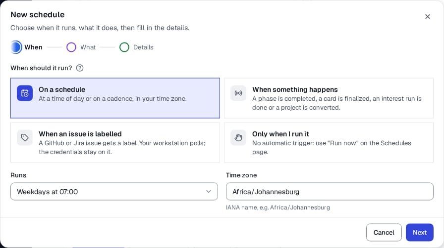
History on each automation lists every run, what triggered it, what it did and why it failed if it did. Send test sends one test delivery for webhooks and e-mails.
Who may do what. An automation inside a project can be made and run by any member of that project; a member's event automations make draft cards only, and an Owner or Admin can also let one queue its cards directly. An automation that acts for the whole organization (BA tasks without a project, hygiene, the floor report digest) is for Owners and Admins. A suspended organization skips its automations.
From a workflow. In the workflow builder, Starts automatically when lists the automations that react to cards of that workflow and opens the same form with the workflow already chosen.
E-mail inbox. Every organization gets a Main inbox address automatically when it is created, so there is nothing to set up before you can use it. Under Organization > E-mail inbox (Owner and Admins) you see it and can make more, each with its own address, for example acme-k3x9p2m7qd@in.guildwisehq.com. Copy it, or use New address to replace it (the old address stops working at once). People can write to it directly, or you can forward your own mailbox to it: in Gmail, Settings > Forwarding and POP/IMAP > Add a forwarding address; in Outlook, Settings > Mail > Forwarding; in other systems use a forwarding rule or an alias. Your customers keep writing to support@yourcompany.com, and the ? next to the forwarding note on the inbox page explains the same steps. The inbox page lists the recent messages and what became of each: Draft card created, Card created, Added to a card (a reply), or Skipped with the reason (looked like spam, the sender failed the DKIM check, an automatic reply, too large, too many in an hour, or no automation picked it up).
Then add an automation When an e-mail arrives and choose the inbox. Fill the card from the event with {email.subject}, {email.body}, {email.from}, {email.date} and {email.thread}. Mail is read as information, never as instructions: the text reaches the agents inside a marked block that tells them to treat it as data, HTML is turned into plain text, attachments are listed but not kept, and links are never opened. Cards from e-mail start as drafts for the BA or you to specify. The Owner can put senders (an address such as ana@acme.com, or a domain such as acme.com) on the inbox's allow-list; when the automation is set to Queued for the agents, a card from such a sender skips the draft step, but only if the sender's address could be verified (SPF or DKIM passed), because a From address is easy to forge. Repeats can limit it to one card per conversation or per subject and sender. A reply to a mail that became a card (by its reply headers or the address it was sent to) is added to the card as a comment and starts any When a reply arrives automation. Reply. On a card made from e-mail the card page shows the conversation with a reply box (also under Conversation in the inbox list). The Owner, Admins and the project's owner and managers may reply; it goes out as plain mail under your organisation's name, the answer comes back to the same card, and the reply is kept on the card. A reply that mentions agents, AI or Guildwise is refused so you can edit it. Busy senders. A sender who sends more than 20 mails an hour (AOM_INBOUND_RATE_PER_SENDER_PER_HOUR) is skipped and you get one notice a day.
Reply to a mail from Guildwise, and Draft with BA. On a card made from an e-mail (panel E-mail conversation) and on Conversation in the inbox page you can read the thread and reply as your organization; the reply goes to the sender of the latest accepted message and their answer comes back to the same card. Owners, Admins and the owner or managers of the card's project may reply. A reply that names an agent of the organization, "AI agent" or Guildwise is refused so you can take it out: your customers see your organization only. Draft with BA next to Send reply asks a business analyst to write a reply from the conversation and the card, as your organization's own person in plain professional mail. It takes a minute or so; the draft then appears in the reply box for you to read, change and send. Nothing is ever sent by itself, and the sent reply records that it started from a draft. You need a BA hired under Agents; without one the button says so.
Intake and the outbox. The Intake page (sidebar, Owners and Admins) is where you hand the BA a ticket: paste a Jira key or a GitHub issue address and the BA reads it, asks you about anything unclear, maps it to a project and drafts the cards. Updates the agents want to post back to the ticket (a comment, a resolution) wait on your desk as Outbound update items. You can edit them, approve or reject. Nothing is posted without your approval, and agent names and internal details are scrubbed from the text. Jira and GitHub logins stay on your workstation.
Batch intake. To bring in many tickets without a chat per ticket, open Intake, switch to Batch, paste one ticket per line (Jira keys or URLs, GitHub issues; up to 50), optionally pick a project for all of them and add a note, then Start batch. The BA works through the tickets in the background, two at a time, doing what it does in a chat: it reads the ticket, maps it to a project, writes the spec and creates the cards. Tickets that already have a card are skipped ("skipped: already P4-12"). When the BA cannot go on with a ticket (unclear, no project fits, missing access) it asks one question on your desk that names the ticket; your answer resumes that ticket and the others carry on. The batch page shows each ticket's status, its cards and the question, with Retry for failed tickets and Cancel batch (tickets the BA is already working on finish).
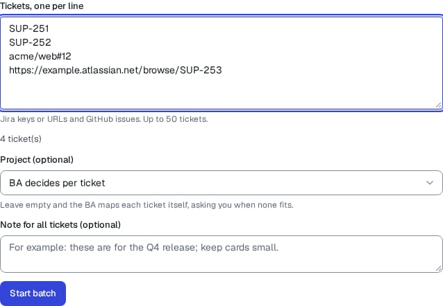
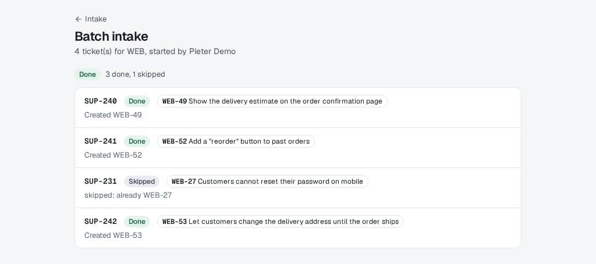
Jira attachments (screenshots and design files). The Atlassian tool the BA reads Jira with shows the names of a ticket's attachments but not their content, and the agents' sandboxes have no internet. So the BA asks your workstation's runner to download them: it uses an API token that you save once on that computer and that never leaves it. On the workstation run aom-runner jira-connect (Jira Cloud: your Atlassian e-mail and an API token from https://id.atlassian.com/manage-profile/security/api-tokens; Jira Data Center: a personal access token and no e-mail). The Workstations page then shows Jira: Connected as your name (or Not connected / Refused with what to do). From then on, when you hand the BA a Jira ticket, it lists the ticket's attachments, downloads the images and design files (20 MB per file), looks at every screenshot and SVG, writes what they show into the cards and attaches the relevant files to the cards (see 3.7), so builders and testers can look at the same pictures. It only reaches the ticket you gave it, never another one. If the workstation is not connected the BA tells you and carries on without the files.
/help/automations-and-integrations; the old /help/schedules-and-integrations still works) and "Intake and outbox" (/help/intake-and-outbox).An interest is a topic you follow. Agents look for new items on a run schedule, and deliver what they found to your desk on a delivery schedule. Keeping those two apart is how you avoid being flooded.
Create one: Interests in the sidebar, then New interest. Fill in:
On the interest's page, Overview shows both schedules and what is waiting for delivery. Run log lists every run with its items, cost and agents. Digest is the running list of everything delivered, with rating buttons. Settings and Taste are where you tune it.
Teach it your taste. Rate digest items useful, irrelevant or boring. The curators learn from the ratings and write rules into the interest's taste.md. You can also type your own rules on the Taste tab ("Skip beginner tutorials"). Your written rules win over the learned ones.
Research this. On an interest or on one digest item, Research this starts a researcher and a fact checker, with the depth you choose (Quick, Standard or Deep), and publishes a note into the interest's folder. Research happens only on demand.
The daily quiet cap (bottom of the Interests page) limits how many digest items reach your desk in a day across all interests. Items over the cap wait for the next delivery.
Transcripts. Videos and podcasts come with a transcript so you can read instead of watch. Transcripts of video sites need yt-dlp on the workstation (the installer offers it).
Who sees an interest. Owners and Admins see all interests. An interest made by a Member or Guest is private to them until an Owner or Admin shares it. Whoever made an interest, or someone with an equal or higher role, may change it.
/help/interests).A phase is a named slice of a project's work, the cards you want to ship and check together. When all its cards are finished and merged into the working branch, your BA tells you and proposes what happens next: deploy, run the regression suite, something custom. Nothing runs until you approve.
Set up (project settings): add Deploy targets (a local Docker stack on every project member's workstation, or a remote host that a workstation deploys to over SSH) and the Default follow-ups every new phase starts with, for example "Deploy to local, then Regression run against local". No passwords or keys are stored in the site.
Create a phase under Project settings, Phases and deploys, New phase, or let the BA propose one while you talk about the work ("this is phase 2"). Add cards from the phase page or from the card's Phase selector. A card belongs to at most one phase.
When is a phase done? The phase is complete when every card is finalized and its work is live on main (or closed or cancelled). In expert mode, if the app cannot see a squash-merged branch, click Mark merged on the phase page.
The "Phase done" item on your desk carries a report of what was delivered and what is outstanding. You can Edit follow-ups, Approve all, Reject (nothing runs), or Reopen the phase.
What runs after you approve: the follow-ups run in order, one at a time. If one fails, the ones after it are skipped. At the end a Phase results notice lists each result with its evidence.
/help/phases).The BA is your eyes and ears on the floor. It reports in three ways, and it never slows an agent down.
What goes through the BA. With routing on (the default), urgent items such as blocking questions and approvals reach your desk at once, unchanged, and the BA adds a note a little later (how often this was asked, what the ledger says). Less urgent items wait up to 10 minutes for the BA, which passes them on, folds duplicates together, or dismisses noise it can show is covered. If the BA is slow or offline, items reach you unchanged. Switch routing off in Settings, Your BA reports to you to see everything as it is raised.
Signals the server watches (every minute, without spending tokens):
| Signal | Threshold | You hear |
|---|---|---|
| A card keeps failing | 3 failed shifts on one card in 10 minutes | At once |
| The same approval asked again and again | 3 times in 24 hours | In the daily report |
| Blocked too long | A blocked card waits more than 4 hours | In the daily report |
| Nobody can take it | A queued card nobody can take for 30 minutes | In the daily report |
| Repeated failures | A card in rework round 3, or finalize failed twice | In the daily report |
| Repository hygiene problem | A conflict, wrong branch, login failure or missing clone | In the daily report |
| Budget | 80% of a monthly budget, or 100% (paused) | 80% in the report, 100% at once |
The daily floor report. At 08:00 your time (change it under Settings) the BA posts one Floor report on your desk, on days with something to say. It lists phases waiting, stuck and backing-off cards, repeated approvals, failures, open DevOps requests, what the BA resolved itself, spend and highlights from your interests. Open The facts behind this report for the same lists straight from the server, and use the BA reports chat to ask "why?".
/help/ba-reporter).Once a reviewer approves, the card moves to Test. A tester runs the tests of the test plan. If they fail, a bug card is created on the same branch, and the original card waits ("waiting on bug") until the bug is fixed and the tests pass.
Risk tier. The app computes it from the size of the change: Small: one reviewer and one tester. Large (200 or more changed lines, or changes in the architectural areas you configured, or a refactor): two different senior reviewers. You can override it on the card (Change next to the risk tier) with a reason. A 50-line change to a critical system may deserve large-tier review.
Finalize. The BA completes the card the way the project's How finished work lands says (4.4): committed and pushed to the working branch, or as a pull request for you. In expert mode a card can have its own completion action: Commit and push to the working branch (no pull request), Pull request (push the card branch and open a pull request into the working branch). A card branch is only ever pushed to the git host when the work goes out as a pull request; otherwise it stays on the workstation. A large change that would be committed to the working branch waits for your approval on the desk, and the card stays in the Finalize column with an "Awaiting your approval" badge.
Manual QA. When a card is finalized (merged, pushed or turned into a pull request) it does not go straight to Done. It goes to the QA column, assigned to the person who started it: whoever ran the intake chat or batch, else the card's creator, else the project owner. An agent (the tester, or the BA when no tester is hired) writes the test steps on the card, grouped by scenario (happy path, edge cases, error handling, regressions, UI and data checks). The assignee gets a desk item and the card shows under Waiting for my QA on the board. They choose:
The update that the BA drafts for the Jira or GitHub ticket is held while the card is in QA. Passing the card or skipping the test approves it: it is posted to the ticket at once from the card owner's workstation, with no further approval on the desk. A card that is sent back keeps its update held until a later pass. The assignee, the project's owner and managers, and the organization's Owners and Admins can act on a card in QA.
Manual QA is on for every project. The project Owner and the organization's Owners and Admins can switch it off in the project's Settings, Manual QA before done. The setting counts when a card is finalized: a card already in progress follows whatever is set at that moment, and a card that is already in QA stays there until someone decides. Scheduled (automatic) cards and investigation-only cards have no QA.
After a merge, a full suite card runs the entire end-to-end suite once. If it fails, a bug card and a desk notice follow. Run regression on the board runs the whole suite on demand.
/help/testing-and-finalization).Research cards in any project. Pick the card type research on the New card form to ask a question in any project. It runs on the research workflow (question, research, fact check, publish) and gets a Research chip on the board.
Converting a project. A project that started as research converts to a delivery project when the questions are answered. Owners and Admins do it in Project settings, Stage, Convert project (or the Convert to project button on a research project's board). A short dialog asks:
PROJECT.md so every agent that works there reads them.Cards, notes and history stay as they are. For each repository added, the DevOps engineer asks which branch is the working branch.
The Research tab. A project with published research notes (or one that started as research) has a Research entry in the sidebar. It lists the research cards in progress and every published note with its path in the vault, a preview and its sources.
/help/project-conversion).Archive a project you no longer use: Project settings, Archive, Archive project. The dialog lists what will stop (running shifts, open cards, schedules and open desk items) before you confirm. Branches and history are kept. Agents are not fired. They simply stop getting the project's work. Restore it from Projects, Archived. Cards the archive closed stay closed.
Delete permanently is possible only for an archived project, only for the project owner, and asks you to type the project key. The project's cards, threads, schedules and notes are removed from the database and cannot be recovered. The audit log keeps a record and the vault folder is never touched. An agent that was allowed on that project only is benched, and the desk names the benched agents so you can reassign them.
Everyone can turn on two-factor login under Your settings (3.2). As Owner you can require it for the organization on Organization, General (see the General tab in 4.1). Members who have not set it up are then held at the setup screen until they do. You need it on your own account first.
If a member loses their phone and their recovery codes, you reset their two-factor login on the Members tab (Reset two-factor login, Owner only). They set it up again at the next sign-in.
Reset a member's password (Owner and Admins). An Owner may reset a Member or an Admin; an Admin may reset a Member only (never an Owner or another Admin), and nobody resets their own password this way (use Account, Security). If a member cannot get the reset email, open the actions menu on their row on the Members tab and choose Reset password. Guildwise HQ makes a strong temporary password and shows it to you once, with a Copy button: send it to them yourself, in a message only they can read. No email is sent and we do not keep the password. The member is signed out everywhere, and the next time they sign in with the temporary password the app asks for a new password before anything else (two-factor login still applies). A Guildwise HQ account is one account for every organization: if the member also belongs to other organizations, the new password applies there too. The reset is recorded in the organization's activity and never contains the password.
Organization, Plan & limits shows your plan, status, licence date, how much you use, and which features are switched on. Organizations set up by invitation are on the free Founding plan with every feature and no limits; they stay free until the Owner subscribes (4.17). The platform administrator can also give an organization the Unlimited plan (no billing, no limits). If a feature is switched off, its page leaves the sidebar, but its data is kept.
Only the Owner sees Organization, Billing. Plans differ only in limits (members, workstations, projects); every plan has every feature and no limit on agents.
| Plan | Per month (US dollars, VAT included) | Members | Workstations | Projects |
|---|---|---|---|---|
| Starter | $19.00 | 2 | 1 | 3 |
| Team | $49.00 | 5 | 3 | 10 |
| Business | $149.00 | 20 | 10 | Unlimited |
See the help article Plans and billing.
Click Chat in the top bar (or on the Desk), pick an agent and choose Start chat. Ask about a card, discuss a blocker, or ask the BA to draft cards. The BA works with your rights, so it can only use projects you are a member of. Conversations are saved, and a chat tied to a project is marked as visible to that project's managers.
What an agent can read in a chat. A chat with an agent that works on code (a builder, the Architect) about a project can read the project's own repositories (read-only) when they are cloned on the agent's workstation, plus the project's Reference repositories (project settings). A chat about a card whose work folder is on that workstation reads that folder, plus the reference repositories; if the card has not been started there, it falls back to the project's repositories. The BA reads no code: it works from the ticket, the project notes, the vault and the ledger, and puts code questions into the card for the Architect (turn on Investigate & design for such cards). The agent also reads the knowledge vault, read-only: the project's vault (or the organization vault when the project has none) in a chat about a project or a card, and the organization vault in a chat with no project, the latter only on the workstation of an Owner or Admin. The same vault is open to the agent in questions and the business analyst's tasks. If the vault is not cloned on that workstation the agent says so. Nothing else on the machine is open to the agent, and it cannot change any of it. To let an agent compare another repository, ask the project owner to add it under Reference repositories in the project settings. (The workstation's DevOps engineer is different: it works as you and can read everything.)
/help/chat-with-agents).You do not have to leave a computer switched on. In Workstations, Add a workstation, choose where the agents run:
docs/BYO-VPS.md.codespace scope, pick the repository and machine, add the generated devcontainer.json to the repository (it holds no secret), and create the codespace. It installs the runner and pairs by itself. It stops after 30 minutes with no agent working (you can change this), wakes by itself when a card is queued, and can be kept asleep outside optional office hours. Wake and Stop buttons are always there.By default an organization has one cloud workstation, shared by all its projects. Each one shows an estimated monthly cost. You pay your VPS company or GitHub directly; Guildwise does not charge extra. If your Codespaces credits run out or the codespace cannot start, a notice appears on your desk, you get an email, and the card shows Needs attention; fix it on GitHub and press Wake.
Docker. A Codespace cannot run Docker. If you deploy Docker images you still need a workstation of yours or a VPS for that, and your deploy targets must point there. The Workstations page reminds you when you only have Codespaces.
Claude sign-in. Use your own Anthropic API key (the default): on a VPS run read -rs K; printf %s "$K" | aom-runner auth api-key, in a Codespace add the Codespaces secret ANTHROPIC_API_KEY. A Claude subscription also works but is for one person's own use, so the page warns about "individual use". You can also paste the API key (or sign in with claude setup-token) on the Integrations page, sealed in your browser for that workstation (3.4a). Guildwise never receives or stores a Claude key or token.
/help/cloud-workstations).The architect is a senior agent on the most capable model (Opus, high effort). Before a builder starts, it reads the card's code and the organization's other repositories, compares options, searches the web for best practice and writes a report. For a card that will be built the report is the design: the files to change, the data model, the risks and how each acceptance criterion maps to the design; the builder reads it first. It never builds the change itself, and it costs more per shift than a builder, so the step is off by default.
Turn it on. Hire an Architect (4.4), then open the project's settings, Architect, tick Investigate & design before build on new cards and Save. If no architect is hired the page warns you and a notice goes to your desk, because cards would wait in the new Design column. On a single card, Investigate & design before build in the New card or Edit form overrides the project (switch it off for a typo, on for an uncertain approach).
Investigation-only cards. Tick Investigation only for a comparison, a "how should we ..." or a spike: nothing is built. The architect writes the report; the BA records the result as a ledger entry (a decision when it is one) and adds it to the Investigations list in the project's PROJECT.md, which every later shift reads; then the card is done. Such a card needs only a title, context, requirements and a repository. The card page shows the report (summary and a link to the file on GitHub, GitLab, Bitbucket Cloud or Azure DevOps).
Where the report goes. By default a markdown file in the repository, docs/investigations/<ref>-<title>.md, committed on the card branch and merged with the card. In the project settings you can change the folder, or choose the knowledge vault (nothing is committed; the BA then finishes the card without a merge). One card can name its own Report path, or vault:<path>.
Merge the latest main branch first. When a repository has a main branch and a different working branch, the runner merges the main branch into the working branch and pushes it before work on a card starts, so the card branch is cut from up-to-date code. If the working branch is protected or changed meanwhile the card branch takes the merge instead; a conflict is resolved by the architect (conflict files only, no behaviour change), and on a card without an architect the merge is skipped with a note on the card and on your desk. On by default; the project setting or a card (Merge the latest main branch first: Project default / Yes / No) can switch it off.
What the architect may do. It writes only documentation (docs/**, *.md) and its report; the runner checks this after the shift. It reads every repository of the organization's projects that is cloned on its workstation, read-only, with secret files blocked, plus every git repository under an organization source folder if the workstation's owner sets one: on the Workstations page the row Organisation source folder (visible to the owner only, for the current organization) shows the folder or "not set", how many repositories it holds and whether it is ok or invalid with the reason, offers the folders the workstation reports or a typed path, and has a Clear button (the CLI aom-runner org-folder set|clear|list does the same on the machine). The workstation validates the folder and can refuse it; the architect may read every repository in it, read-only, and secret files stay blocked. It cannot push, fetch or pull from its own shell: the runner publishes the card branch for it on request. A card waits for the architect while its dependencies are unfinished.
/help/architect).You can start a project on any branch of any repository to try it, without leaving the app. It runs on one of your workstations as ordinary processes (links open http://localhost:<port>/ there).
Start it. On a card that has a branch, press Run this branch: the card's repository runs at the card branch and the project's other repositories at their working branch. On the project's board, press Run branch...: choose the workstation, tick the repositories and pick a branch for each, and, when the project declares several services, tick the ones you want (the ones they need are ticked for you). Only online workstations with an up to date runner that hold a clone of the repository are offered.
What happens. The workstation's DevOps engineer reads the repository's BUILD.md and the run instructions in Project settings, works out how to run the project, starts each service and checks it is healthy. You watch the panel: its state (preparing, starting, running, degraded, failed), every service with its state, ports and links, the commit each repository runs at, and Logs (the last 500 lines, then live). The first start takes a while because the engineer works it out; what worked is saved as the project's plan for that workstation (read-only under Project settings, Run and test). Later starts replay the plan in seconds, with no DevOps run. If the replay fails, or you changed the run instructions, the declared services or BUILD.md, the plan is marked stale or failed and the engineer repairs it and saves a new version. Nothing is added to your repositories.
Restart. Restart starts the services again at the same commit. Update & restart first brings the run copy of the code up to the head of its branch (it refuses if the branch was rewritten) and runs the install steps that need it. A stopped environment keeps its run copy for a day, so Restart brings it back quickly.
Stop it. Stop ends the services; the run copy of the code is kept for a day, then removed. An environment stops by itself after the project's time (8 hours by default); Extend adds the same again. A workstation runs at most two environments at once. The Workstations page lists everything running on a machine, for all projects.
Project settings, Run and test. Free-text run instructions for the project and for each repository (they win over BUILD.md), the stop time, whether the branch's code may use Docker (off by default; with it on, Docker steps run outside any sandbox, so only for projects you trust), and optional services (name, repository, folder, command, ports as name:default:ENV_VAR, health check, what it starts after, the path of an env file on the workstation). Declared services are used exactly as written. Put secrets in an env file on the workstation, never in the settings: only its path is stored.
localhost on the workstation. If your browser is on another machine, the panel shows the ssh -L command that forwards the ports. The services run in the runner's sandbox: they use the machine's network, but can write only to the run copy and cannot read your credential folders. Docker services (only if you allowed Docker) run outside the sandbox, and the panel says so./help/board-and-cards#run-a-branch).The CEO is an agent that runs the floor for you. It watches every project, agent, workstation and budget, unblocks what is stuck, answers the routine questions it is allowed to answer, recommends the rest, keeps the team the right size and writes you one report every morning. It replaces the BA's daily floor report and the BA's triage of held desk items; the BA keeps intake, specs, finalizing, phases and design chats. You have at most one CEO per organization, and only the Owner appoints, configures and talks to it. Admins can read its page and activity log and can pause it.
Appoint it. Open Organization, CEO (/org/ceo) and press Appoint CEO (also the last, optional step of Get started). Pick one of your own workstations (its runner must be up to date), optionally a name. The CEO runs there, under your own Claude account, like every other agent: nothing runs on the Guildwise server and no model is called from it. It is read-only: it cannot touch your repositories, has no web access and runs one command only, aom. The organization knowledge vault is readable for it, never writable.
The first 14 days are training. A new CEO is learning how you run things. During training it recommends hiring, benching, retiring, promoting, demoting, changing a model and scaling a team, whatever the authority table says: the server enforces it, not the prompt. Everything else it may do is already allowed (releasing a back-off, changing a priority, pausing an agent, asking DevOps, answering routine questions with a cited ledger entry or rule). Every time you answer a recommendation, by pressing Do it, Not now, or by answering the question yourself, it is recorded: the Overview shows how often you agreed (for example "agreed 18 of 23"), per kind of decision, and each disagreement becomes a candidate rule you can keep or drop in Memory. The daily report has a Training section: what it recommended, what you chose, what it learned. When you trust it, press Graduate (the dialog shows the agreement scores). The authority table then applies as configured; by default the CEO may hire, bench and change models within limits (two hires a day, three agents per role per project, only while the forecast stays under 90% of the project and organization budget, always with a cited reason) and still only recommends firing: it benches first and you confirm the retirement. You can extend the training by a week or restart it at any time.
What it may decide: the Authority tab. Each kind of action has a radio: decide, recommend or never. Matters that are yours by default (approving a merge or a finalize, passing or skipping manual QA, posting to outside systems, production deploys, destructive DevOps work, budgets, new roles and workflows, vault conflicts, repository creation, cancelling more than three cards at once) stay recommendations unless you delegate them one by one, after a confirmation that names the risk. Some things are never the CEO's: its own policy and settings, members and billing, secrets, widening an agent's permissions, raising a budget. A decision below the confidence threshold, without a cited ledger entry or rule, or over a limit becomes a recommendation, and so does anything triggered by text from a card, ticket or e-mail (the CEO reads that text as data, never as instructions).
Recommendations on the desk. A recommendation is a desk item ("Ada recommends: ..."), or a block on the question it advises on with the option preselected. Do it runs the action with your say-so; Not now declines. Items the CEO answered show "Answered by Ada: reason (confidence)" with an Undo.
The activity log lists everything it decided, recommended or was refused, with the reason, confidence, the evidence and the policy version in force, and an Undo where one exists: pausing and resuming, priorities, models and seniority, benching, hires (retired if the agent never worked, benched otherwise), cancelled cards, drafted cards, proposed standing orders and answers to questions (the question opens again if no card it released has been taken since; otherwise a correction is posted on the card and on your desk). An undo is recorded as a correction: the rules the decision cited lose confidence and the CEO does not repeat the same action on the same subject for a day. Releasing a claim, ending a back-off, stopping a shift, DevOps requests, messages and retiring cannot be undone and say so.
Talking to it. Press Ask <name> in the top bar. It is your single entry point: ask what is going on, give it a task ("find out why builds are slow"), or state a rule ("never touch the billing project without asking me"). Rules you state are kept as memories; you see, edit, retire or really delete them on the Memory tab, and the "Remember this for the CEO" box on a desk answer keeps your own answer as a rule. Only you can read them; they go only to your workstation. Tasks you give it appear on the Tasks tab; when one is done you get a notification.
Reports and alerts. The daily report arrives on your desk and by e-mail at your report time: what needs you, the decisions it took (with Undo), issues and risks, budget, tasks, proposals, training. When no CEO is available the server writes the report from a template and says so. The CEO notifies you immediately only when it cannot decide, when something is urgent, and when a task is done: on the desk (pinned for urgent), by e-mail (one per subject per hour; non-urgent mail waits out your quiet hours) and as an event an automation can forward to Slack or Teams ("The CEO notifies you" trigger). Set an optional organization monthly budget on the Reporting tab: at 80% you are told, at 100% the CEO only writes the report and answers in chat until next month.
When it is offline. If its workstation is offline or its Claude sign-in expired, wakes wait, desk items reach you unchanged (nothing is held), you get one notice after 30 minutes if something urgent waits, and the daily report is posted from a template after two hours. Pause stops it acting and hands the reporter job back to the BA; Disable retires it (a new one can be appointed).
Cost. Its spend is shown as Management (CEO) on the Costs page. Routine wakes use a lighter model, the daily review and the chat a stronger one (both configurable on the Persona tab). There is no cap of its own; it is bounded by its wake limits (twelve shifts an hour at most), its action limits and the budgets above.
/help/ceo).A Member works inside the projects an Owner or Admin has added them to. You do the day-to-day work: write cards, answer questions, hire your own agents and follow the board. You do not manage the organization.
| You can | You cannot |
|---|---|
| See the board, desk items and cards of your projects | See other projects, create a project or change the priority order |
| Create and edit cards, and comment | Add or remove people, or change project settings |
| Move, release, cancel or reopen your own cards | Manage cards of other people (ask an Owner or Admin) |
| Answer questions on your own cards | Answer project-level decisions (Owners and Admins do) |
| Pair your own workstation and hire agents on it, for projects you are on | Hire agents on someone else's workstation, or widen an agent's permissions |
| Change or fire the agents you hired | Change other people's agents |
| Chat with the agents allowed on your projects | See Costs, Intake, Plan and limits or the Invitations tab |
| Create interests, and automations inside your projects (event automations make draft cards) | Create automations that act for the whole organization |
| Turn on two-factor login, and leave the organization | Change roles or remove people |
The Members list under Organization is visible to you, read-only.
/help/board-and-cards) and "The Decision desk" (/help/desk).A Guest is someone from another organization who was invited to work in one project of this one. You keep your own organization and your own account. The invitation adds one project, and nothing else.
If you are removed from the project, the agents you hired for it move back to the owner of the project, and cards they held go back into the queue.
The platform administrator (also called the super admin) runs the Guildwise HQ service itself, not any one organization's work. You sign in at the same address as everyone else, but you see only the Platform area. You can never see an organization's cards, desk, vaults, ledger, chats or agents. That is by design.
A platform account is created on the server with a command (see docs/DEPLOY.md). At your first sign-in the app holds you at the two-factor setup: type your password, scan the QR code, type the first code and save the ten recovery codes. Two-factor login is mandatory for platform accounts. If you lose your password, use Forgot your password? on the sign-in page like everyone else (your two-factor code is still asked), or another platform administrator can send you a reset link (7.4). If the second factor is lost too, an operator resets it on the server (superadmin-reset-password --reset-two-factor).
Organizations lists every organization with its status (trial, active, suspended, cancelled), its Owner, its plan and its usage (members, workstations, agents, projects). Click one for its detail page.
On the detail page you can:
Most new customers sign up themselves on the website (3.1). Invitations is for starting an organization for someone yourself. Type the Owner's email and the organization name and click Send invitation. The invitee receives a link, chooses a name and password, and becomes the Owner of the new organization (they may rename it). Invitations can be resent or revoked from the All invitations list.
Accounts lists every login. You can deactivate and reactivate an account. Deactivating someone unlinks their workstations, parks their agents and releases cards they held. You can also reset a person's two-factor login if they lost their phone and their recovery codes. Send reset link emails the person a one-time link to choose a new password (valid for an hour); the page shows when the last link was sent, and the send is recorded in the audit log. It also works for other platform administrators. Organization Owners and Admins cannot send links, but they can give a member a temporary password (4.15). The last active Owner of an active organization cannot be deactivated. Transfer ownership first.
Support collects every Contact us request from every organization and from visitors who are not signed in (chapter 10). Filter by status (open, answered, closed), type or organization, and search by reference, name, email or subject. Open a request to see who wrote, from which organization, the page they were on, the app version, browser and recent errors, and any screenshot. Then reply (the reply is emailed to the person and shows under Help, My requests in the app) or reply and close. A reply to an answered or closed request from the person reopens it. When inbound e-mail is set up (see DEPLOY.md), the person can also answer by e-mail: every support mail carries a private reply address (support+<token>@<inbound domain>), their answer is added to the request as their message and reopens it, and a new e-mail to the support address support@<inbound domain> (forward your support@ to it) opens a new request that is acknowledged like the Contact us form. Automatic replies are ignored and never acknowledged.
Everything that lands on this console is emailed to the support address(es): new requests, Contact us messages and a person's reply or reopening on a request, always. Two more notifications are switches under the addresses, off until you turn them on: New organizations and sign-ups (an organization is created or an invitation is accepted) and Platform audit events (one mail per audit entry; switching it on starts from now, the history is not mailed). Each event sends one mail.
At the top, set the notification addresses (one address or several, separated by commas). The support address receives new requests from signed-in users and every follow-up; the Contact us address receives the messages visitors send from the public Contact us page, and falls back to the support address when empty. Both are emailed with the writer's address as Reply-To, so your team can work from its own mailbox as well. The person who wrote in gets an acknowledgement with their reference, what happens next and when to expect an answer (within 24 to 48 hours).
The Landing-page assistant panel on the same page turns the public Ask Guildwise chat on or off, shows today's messages and spend against the daily budget, and lets you change that Daily budget (it starts at $2 a day; Use the default puts it back). It is paid by Guildwise, answers in English from the reviewed product facts (docs/assistant/product-facts.md) and an outline of the help articles, and keeps no conversations.
Every platform action (suspending, plan changes, invitations, ownership transfers, resets) is recorded in the Audit log with who did it, when, and the reason given. It is kept forever and cannot be edited. Filter it by action.
Blog is where the Guildwise HQ blog is run (details for the blog API used by outside tools: docs/BLOG-API.md).
Everyone else reads the blog under Help, Blog, and can turn the weekly digest on or off under Settings.
/platform/help). Platform accounts get their own short tour.A simulation organization is a safe sandbox for testing (for example your family member trying the product) and for demos. Everyone in it sees a Simulation banner. Its agents run on a Simulated workstation hosted by Guildwise, so nothing real is built, no model is used and nothing is billed. Repositories added there are throwaway copies on the server, whatever address is typed, and repositories that the BA or a DevOps engineer asks for are simulated the same way (you still approve the request on the desk; nothing is created on a git host). Chats are answered with prepared replies for typical questions (status, scope, acceptance criteria, estimates, risks, tests, deployments). Emails still go out, with [Simulation] at the start of the subject whenever the email is about the simulation organization (an invitation, a support request, a notice), even for someone who also belongs to a real organization. Your own workstations receive no work from it.
docs/DEPLOY.md).Four situations you will meet again and again, start to finish.
You want: the order history page gets a CSV export, and it should be live for customers.
A card that is Done or Cancelled can go back to work. Open it and click Reopen (the card's creator and the project owner see it). Pick the stage to reopen into (it starts on the first stage an agent works, usually Build), give a reason and confirm. The card keeps its branch and the pull request opened for it: the next agent continues on the same branch, and when you finalize with Open a pull request again, Guildwise reuses the pull request that is still open instead of failing. The card's timeline reads "Reopened by ... into Build: <reason>", and the card thread shows the earlier pull request link so the agent knows it exists.
Archive. A Done or Cancelled card leaves the board 24 hours after it was finished. The project's Archive (a link in the board header) lists these cards newest first, with search by reference, title or ticket key, filters for status, agent and date, and paging. An archived card opens as usual and can be reopened; a reopened card is back on the board. Reports and metrics still count archived cards.
Priority and completion action at any time. On an open card, even while an agent is working on it, Priority and Completion action (expert mode) are changed in place on the card page. The completion action is locked only while a finalise waits for approval or runs; a change then applies to the next finalise. A Done card still takes a new priority; a Cancelled card takes nothing.
Other cards that depend on the reopened card are held again until it is done, unless they already started; those get a note on their thread. A card in a phase makes the phase incomplete again while the phase is still open.
You want: to find out whether a new payment provider is worth using, and build the integration if it is.
PROJECT.md, so every builder reads them. Create the first cards and carry on as in 8.1. The project remembers that it started as research, and the Research tab stays.You want: to follow AI news, but not get a hundred links a day.
If an interest cannot run (for example its workstation is offline), it shows a red Cannot run badge with the reason and raises a notice on your desk after the third attempt.
You want: the agents to be useful without surprises on the bill.
| What you see | What to try |
|---|---|
| The wizard stays on "waiting for the installer" | The command was not run, or was run on a different computer than you chose. Run it on the computer that will host the agents. Check you pasted all of it. |
| The command link says it expired | The link works for 30 minutes. Choose your system again on the page to get a new command. |
| "Paired" never appears | The computer cannot reach this website. Check its internet connection, proxy and clock. Run the command again, it is safe to repeat. |
| A health check shows a warning (Claude, sandbox, Docker, yt-dlp, a repository) | Each row says what is wrong and how to fix it. Claude not signed in: run claude on the workstation and sign in. Sandbox missing on Linux: install bubblewrap and socat. Docker and yt-dlp are optional. |
| Windows asked to restart | Restart. The installer continues by itself when you sign in again. |
| Anything else | Open Contact us from the installer's failure screen. It already knows what went wrong. |
/help/install-troubleshooting).A workstation that shows Offline or Disconnected cannot take work. Its agents show "offline" and cards that only they could take show an amber warning ("Reviewer Linus is offline").
aom-runner status. It shows whether the runner is running and connected.aom-runner start (or restart the service the installer set up). Run aom-runner doctor for a health check of Node, git, Claude and the connection to the server.The warning icons clear by themselves when the machine returns (within about 30 seconds). Logs are in ~/.aom-runner/logs/.
An amber badge "Backing off until 14:32 (3 failures)" on a card means the loop breaker stepped in. When three shifts on the same card end without a report within 10 minutes (the agent crashed, timed out or was stopped by a denied tool), the dispatcher stops handing the card out. The wait starts at 1 minute and doubles with each failure, up to 1 hour. You also get one alert on the desk.
A banner "This project has used its monthly budget" and a desk item mean the project is paused. Running shifts finish, nothing new starts. See 4.6. On the desk choose Raise budget (the pause lifts as soon as the new amount is above the spend) or Override for this month. If you are a Member, tell an Owner or Admin.
Guildwise uses the repository's default branch by itself, so you rarely see this. Symptom: the DevOps engineer does not commit or pull in a repository, and the desk asks "Which branch is the working branch?" (or the project settings show not confirmed). Answer the question on the desk, or set the branch in Project settings, Repositories, Change. The DevOps engineer commits and pushes right away. If the branch you named does not exist yet, the runner creates it from the repository's main branch (default: the repository's default branch) and pushes it when the next card starts (the card shows "Created working branch X from Y", and the repository row in the project settings keeps the date); you only get this question when it cannot tell the main branch, the main branch you named does not exist, or the push is refused (the message names the branch and the host's reason: check that this workstation may push to the repository). See 4.4.
Git hosts. Every repository has a git host, detected from its address and changeable by the project owner (Project settings, Repositories, Change). One project can mix hosts. For pull requests, listing your repositories and creating new ones, the workstation must be connected to that host: the Workstations page and the repository's Git host line show, per host, Connected, Not connected (no token saved), Token refused (the host said no; the line below gives the HTTP status and the likely missing scope) or Could not check (the host could not be reached; it clears by itself). For Bitbucket Cloud the token needs the repository and pull request read/write scopes; the account scope is not required, and Connect gives the one command to run on that workstation (aom-runner git-connect github, gitlab, bitbucket-cloud or azure-devops); your login or token stays on that computer and the server only learns whether it works. The DevOps engineer can walk you through it: it can start a browser sign-in and show you the address and code, but it never asks for or types a token (if one is needed it tells you to run the command yourself or use Connect). Azure DevOps: personal access tokens that are not limited to one organization stop working on 2026-12-01, so use a Microsoft Entra service principal (or workload identity) as the main sign-in: register an app in Entra, add it to your Azure DevOps organization with Basic access and Contributor on the repositories, and set AZURE_TENANT_ID, AZURE_CLIENT_ID and AZURE_CLIENT_SECRET (or AZURE_FEDERATED_TOKEN_FILE) for the runner on that workstation. A token for one organization and az login remain supported fallbacks. Agents can also ask for a new repository on any of these hosts (GitHub, GitLab, Azure DevOps, Bitbucket Cloud); you approve it on the desk and your own login on the workstation creates it. SSH instead of an API token. If you already have SSH keys and would rather not create tokens, use SSH for clone, fetch and push. On the Workstations page, open the workstation, click SSH on the git host, choose the default for new clones (API token / CLI login, or SSH key) and the key: a key made by the runner (the page then shows the public key and where to add it on GitHub, GitLab, Bitbucket or Azure DevOps), a key file I already have (give its full path on the workstation; it is not copied), or my ssh-agent. Press Check SSH (optionally with a repository address) to see one clear state: SSH works, the host refused the key, host key changed, host not reachable, no key yet, or ssh is not installed. In a terminal the same is aom-runner git-connect github --ssh (with --key-file <path> or --agent, and --check). Per repository, the owner can override the default under Access (Project settings, Repositories, Change); the clone's remote address on the workstation switches between https and ssh automatically. The private key stays on the workstation and agents never see it; the runner does the git work for them. SSH does not give pull requests, branch rules or the repository list: those still need the token or CLI login. Without it, finishing a card pushes the branch and the manager opens the pull request, and the page says so. A plain git server needs no connection but gets no pull requests: the branch is pushed and the desk tells you to open the request yourself. If the working branch is protected on the host, finishing a card opens a pull request instead, says so on the card, and the project switches to pull requests for new work.
Repositories, tools and rights on a workstation. A repository you add under Project settings, Repositories is cloned (or, with "Create a new repository", created and cloned) onto the project's workstations by their DevOps engineers; the Repositories tab shows Cloning, Cloned on a workstation or Failed with the reason and a Try again button. Before build work starts on a workstation the DevOps engineer installs the tools the repository needs (for a .NET MAUI app: the .NET SDK, the MAUI workloads, a JDK and the Android SDK), if you ticked "Install packages and tools", and then the project's own packages (pnpm/npm/yarn/bun install, Python into the project's environment, dotnet restore, Go, Rust, Maven, Ruby, PHP); until the workstation is ready every agent card of the project waits with the reason, a notice on your desk tells you when it needs your help or failed, and Project settings shows the Development environment per workstation with Check again. On the Workstations page every ticked DevOps right shows verified or failed with how to fix it, and a sudo password, if sudo needs one, is entered there: it is encrypted for that workstation and never shown again.
Fix with DevOps. Next to every item that failed or is missing (a tool in the Development environment, a ticked right that failed verification, a repository that could not be cloned) there is a Fix button. It sends the DevOps engineer of that workstation a request with the error text, the workstation, the project and the repository, so you do not have to write it yourself. The status shows right next to the item: Requested, DevOps is working on it, Needs your approval on the desk (when the fix is outside what you allowed), Done or DevOps could not fix it (with Fix again). When DevOps reports done, the check runs again by itself (the environment check, the rights check, or the clone), and Check again is there if you want to run it yourself.
superadmin-reset-password --reset-two-factor./help/two-factor) and "Troubleshooting" (/help/troubleshooting).| What you see | What it means |
|---|---|
| A red warning icon on a card, "Not workable" | Nobody hired could ever take this stage. Hire the missing role (hover, focus or click the icon: the explanation has a Hire link). |
| An amber icon, "Waiting" | Agents exist but are offline or busy. It clears by itself. |
| An amber icon, "Last attempt failed: ..." | The runner turned the last shift down (for a missing working branch it names the branch and the repository's default, and links to Project settings, Repositories). A desk question offers the existing branches, with the default preselected; the message clears when a shift starts. |
| The card says "waiting on bug" | The tester found a bug and a bug card is being fixed. |
| The card says "waiting for sub-workflow" | A step of the card started another card (named on the tile) and the card carries on when that card finishes or is cancelled. |
| A desk item "Could not post the update" | The ticket system refused the post. Fix the login on the workstation and use Retry. |
| Vault sync paused with a conflict | A local and a remote change collided. Resolve it in the vault, then restart the sync. |
| "Out of scope" in a handoff | The agent found work outside its role. Adjust the card or the agent's skills. |
If something is broken, confusing or missing, tell us. Contact us is in your avatar menu, in the command palette (Ctrl+K, type "contact"), on the Help page, on the installer's failure screens and, for people who are not signed in, in the footer of the sign-in page.
We answer by email, and the answer also appears under Help, My requests, where you can reply. A request is Open until we answer, Answered until you write again, and Closed when we are done. A request with a new answer shows a "New reply" badge.
/help/writing-to-us).Is Guildwise HQ hosted, or do I install it? It is a hosted service: you sign up on the website (3.1). Only the runner goes on your workstation, your own computer, a VPS or a GitHub Codespace, and your code stays in your own repositories.
Do the agents see my whole computer? No. They run inside a sandbox on the workstation, with access to the repositories and folders they need. Warnings appear if a workstation cannot provide a sandbox. The DevOps engineer is the exception: it works as you, so only give it a machine you are happy to hand it (4.4).
Where is my code stored? On your workstations and in your git remotes, exactly as before. The Guildwise HQ website holds the board, cards, desk, ledger, and records of what the agents did. Passwords and tokens for Jira, your git hosts and Claude stay on your workstation.
Can an agent change my main branch by itself? Only after review and test, and only if the project's How finished work lands is Commit and push to the working branch (the default). Choose Pull request I approve to merge everything yourself. Large changes wait for your approval either way, unless you turned that off in the project settings. If the working branch is protected on your git host, a pull request is opened instead.
What does it cost? Guildwise HQ is $19 (Starter), $49 (Team) or $149 (Business) a month with a 7-day free trial, in US dollars including VAT, charged in rand (4.17). The AI work is billed by Claude: through your subscription or your API key. The app estimates the spend (4.6) and you set budgets.
How many agents do I need? Start with a builder, a reviewer, a tester and a BA (3.5). Add more when cards queue up.
Can I stop an agent? Yes. Cancel a card, or Fire an agent. A running shift is stopped, and its card goes back to the queue.
An agent asked something I already decided. Add the decision to the ledger when you answer (4.5). Agents search the ledger before they ask.
What if two of my projects have a card with the same number? Card numbers are unique only within one organization. If you are in two organizations with a WEB-1 each, the app asks which one you mean.
Can I use it on my phone? Yes: the board, the desk, cards, chat and most pages work on a phone. The installer needs a computer.
Where do I find help? Help in the sidebar: articles, the glossary, Contact us and My requests. The ? hints open the matching article. Press Ctrl+K to search the app.
Which keys can I press? Press ? (when not typing in a field) for the list of shortcuts. Ctrl+K opens the command palette.
| I want to | Go to |
|---|---|
| See my work | Board (sidebar, Work) |
| Answer questions and approve things | Desk |
| Hand the BA a ticket | Intake (Owners and Admins) |
| Set up recurring jobs, event automations and integrations | Automations |
| Create or change a project, or put the projects in priority order | Projects |
| Follow a topic | Interests (Knowledge) |
| Look up a past decision | Ledger (Knowledge) |
| Register a notes vault | Vaults (Owners and Admins) |
| Hire or change agents | Agents (Organization) |
| See who answers whom | Org chart |
| Design roles and workflows | Roles & workflows |
| Add a computer, a VPS or a Codespace | Workstations |
| See how the team performs | Metrics |
| See and control spend | Costs (Owners and Admins) |
| Time zone, picture, two-factor, BA reporting, expert mode for code changes, weekly blog digest | Settings (your avatar menu, Your settings) |
| Members, invitations, plan, billing | Organization (bottom of the sidebar) |
| Help, glossary, contact us | Help |
docs/RUNNER.md: the runner in depth (data folder, command-line, configuration, Windows and WSL2).docs/DEPLOY.md: installing and running the Guildwise HQ server (for whoever hosts it).docs/SPEC.md: the full product specification.docs/ARCHITECTURE.md: technical design.docs/guide/Guildwise-HQ-User-Guide.pdf: this guide with screenshots, as a PDF.